Human World
human_world_solitary_region
Item Memory used 16
Creatures attributes 36/51/128
0 100% 0x20 01_acid_slime wd57-68 md91-104 a3 a2 m0
100% item_e5_ring_of_rage
100% item_12b_pitcher_of_nadya
1 100% 0x20 01_acid_slime wd57-68 md91-104 a3 a2 m0
100% item_126_bottle_of_light
2 100% 0x25 02_blood_slime wd68-70 md131-255 a5 a4 m0
100% item_10a_cune
3 100% 0x35 08_ring_demon wd81-98 md62-103 a32 a40 m0
100% item_a9_large_shield_of_balance
100% item_110_fiery_key
4 100% 0x35 08_ring_demon wd81-98 md62-103 a32 a40 m0
100% item_1_short_sword
5 100% 0x35 08_ring_demon wd81-98 md62-103 a32 a40 m0
6 100% 0x35 08_ring_demon wd81-98 md62-103 a32 a40 m0
7 100% 0x35 08_ring_demon wd81-98 md62-103 a32 a40 m0
100% item_87_swift_gauntlet
8 100% 0x20 01_acid_slime wd57-68 md91-104 a3 a2 m0
100% item_124_poison_vaccine
9 100% 0x35 08_ring_demon wd81-98 md62-103 a32 a40 m0
100% item_10d_lamp
a 100% 0x35 08_ring_demon wd81-98 md62-103 a32 a40 m0
b 100% 0x35 00_winged_worm wd59-46 md103-116 a52 a45 m0
c 100% 0x20 09_shadow_spider wd74-101 md91-95 a12 a13 m0
d 100% 0x20 09_shadow_spider wd74-101 md91-95 a12 a13 m0
100% item_10a_cune
e 100% 0x90 0a_cursed_demon wd39-31 md59-51 a60 a55 m0
100% item_138_soul_pod_29_sp
f 100% 0x35 00_winged_worm wd59-46 md103-116 a52 a45 m0
100% item_11d_magic_potion
10 100% 0x90 0a_cursed_demon wd39-31 md59-51 a60 a55 m0
100% item_10a_cune
11 100% 0x90 0a_cursed_demon wd39-31 md59-51 a60 a55 m0
100% item_11c_healing_potion
12 100% 0x90 0a_cursed_demon wd39-31 md59-51 a60 a55 m0
100% item_11c_healing_potion
20 100% 0x0 00_winged_worm wd59-46 md103-116 a52 a45 m0
100% item_11d_magic_potion
0 item_136_soul_pod_5_sp
1 item_120_divine_symbol
2 item_11c_healing_potion
3 item_11c_healing_potion
4 item_12f_spirit_key
5 item_126_bottle_of_light
7 item_11c_healing_potion
8 item_139_soul_pod_14_sp
9 item_12e_dorados_ashes
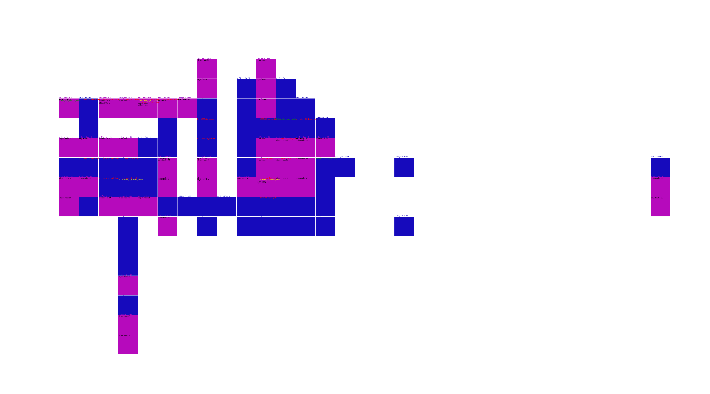
human_world_hidden_region
Item Memory used 16
Creatures attributes 15/52/66
0 100% 0x50 0a_horned_slime wd104-101 md116-94 a14 a14 m0
100% item_11c_healing_potion
1 100% 0x50 0a_horned_slime wd104-101 md116-94 a14 a14 m0
100% item_10a_cune
2 100% 0x20 0a_horned_slime wd104-101 md116-94 a14 a14 m0
100% item_124_poison_vaccine
3 100% 0x20 02_tongue_imp wd68-46 md85-117 a12 a15 m0
100% item_10a_cune
4 100% 0x50 06_fanged_worm wd62-91 md52-133 a14 a15 m0
5 100% 0x20 02_parasite wd100-36 md98-99 a12 a12 m0
100% item_139_soul_pod_14_sp
6 100% 0x20 05_armored_warrior wd91-104 md52-52 a85 a60 m0
100% item_6f_plate_mail_of_protect
100% item_47_cap
100% item_a5_shield_of_resist
7 100% 0x20 02_parasite wd100-36 md98-99 a12 a12 m0
100% item_68_plate_mail
8 100% 0x20 02_parasite wd100-36 md98-99 a12 a12 m0
9 100% 0x20 02_parasite wd100-36 md98-99 a12 a12 m0
a 100% 0x20 02_parasite wd100-36 md98-99 a12 a12 m0
100% item_21_deadly_bastard_sword
100% item_35_morning_star
b 100% 0x20 05_armored_warrior wd91-104 md52-52 a85 a60 m0
100% item_10a_cune
c 100% 0x50 04_night_howler wd68-85 md108-96 a34 a27 m0
d 100% 0x50 04_night_howler wd68-85 md108-96 a34 a27 m0
100% item_112_key_of_knowledge
e 100% 0x20 0d_blood_bone wd91-52 md78-65 a0 a0 m0
100% item_10a_cune
f 100% 0x20 0d_blood_bone wd91-52 md78-65 a0 a0 m0
10 100% 0x20 0d_blood_bone wd91-52 md78-65 a0 a0 m0
100% item_23_guardian_bastard_sword
11 100% 0x20 0d_blood_bone wd91-52 md78-65 a0 a0 m0
100% item_10a_cune
20 100% 0x50 05_cocoon_plant wd65-91 md156-104 a12 a12 m0
100% item_10a_cune
0 item_11e_anti_venom
1 item_125_dust_of_rage
2 item_10c_torch
3 item_123_fire_world_stone
4 item_138_soul_pod_29_sp
5 item_11e_anti_venom
6 item_11c_healing_potion
7 item_11c_healing_potion
8 item_11c_healing_potion
9 item_11c_healing_potion
a item_122_evil_eye
b item_11c_healing_potion
c item_125_dust_of_rage
d item_10a_cune
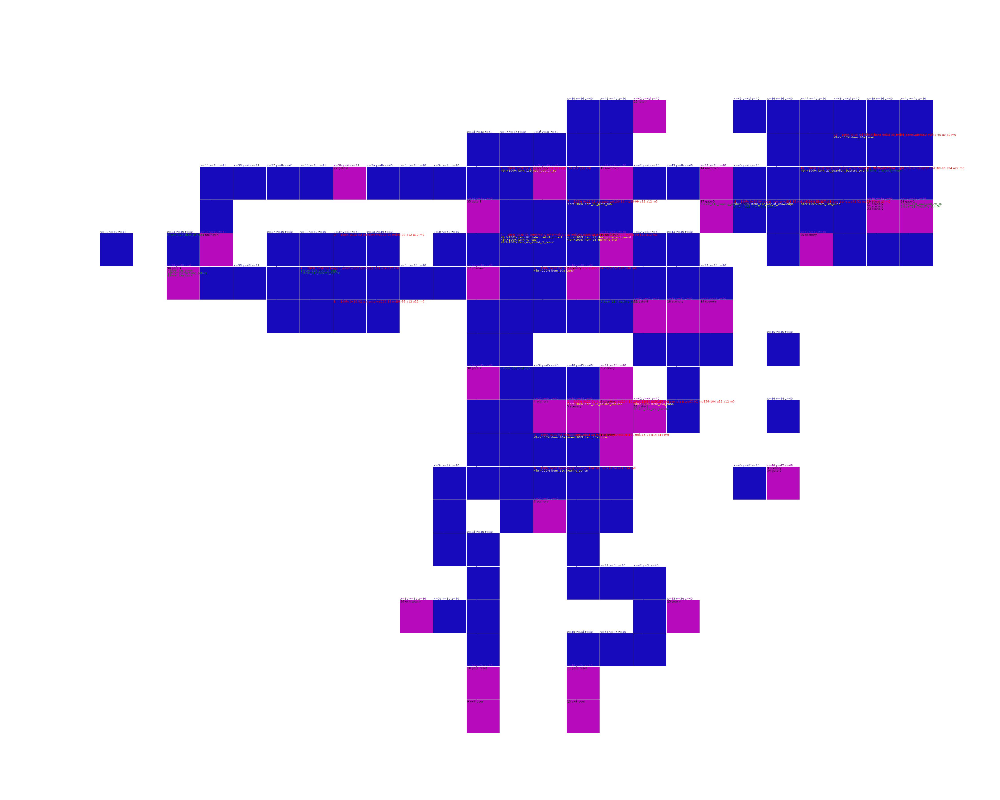
human_world_forgotten_region
Item Memory used 12
Creatures attributes 31/53/128
0 100% 0x30 06_armored_slayer wd78-101 md96-107 a120 a90 m0
1 100% 0x30 06_armored_slayer wd78-101 md96-107 a120 a90 m0
100% item_10a_cune
2 100% 0x30 06_armored_slayer wd78-101 md96-107 a120 a90 m0
100% item_27_great_sword
3 100% 0x30 06_armored_slayer wd78-101 md96-107 a120 a90 m0
100% item_10a_cune
4 100% 0x30 06_armored_slayer wd78-101 md96-107 a120 a90 m0
5 100% 0x30 06_warpoor wd104-46 md124-133 a28 a30 m0
100% item_10a_cune
6 100% 0x30 06_warpoor wd104-46 md124-133 a28 a30 m0
7 100% 0x30 06_warpoor wd104-46 md124-133 a28 a30 m0
100% item_11c_healing_potion
8 100% 0x30 06_warpoor wd104-46 md124-133 a28 a30 m0
100% item_11d_magic_potion
9 100% 0x30 02_gordoral wd103-65 md159-255 a26 a26 m0
100% item_ed_mind_bracelet
100% item_a1_buckler
100% item_3a_giant_axe
a 100% 0x30 06_warpoor wd104-46 md124-133 a28 a30 m0
100% item_10a_cune
b 100% 0x30 02_gordoral wd103-65 md159-255 a26 a26 m0
100% item_10a_cune
c 100% 0x30 02_gordoral wd103-65 md159-255 a26 a26 m0
100% item_be_gothic_shield_of_balance
100% item_2_deadly_short_sword
d 100% 0x30 02_gordoral wd103-65 md159-255 a26 a26 m0
100% item_10a_cune
e 100% 0x30 0a_dweller wd98-107 md103-122 a18 a20 m0
f 100% 0x30 0a_dweller wd98-107 md103-122 a18 a20 m0
10 100% 0x30 0a_dweller wd98-107 md103-122 a18 a20 m0
11 100% 0x30 0a_dweller wd98-107 md103-122 a18 a20 m0
100% item_10a_cune
12 100% 0x30 0a_dweller wd98-107 md103-122 a18 a20 m0
13 100% 0x30 0a_dweller wd98-107 md103-122 a18 a20 m0
0 item_11c_healing_potion
1 item_11f_anti_paralytic
2 item_11c_healing_potion
3 item_11c_healing_potion
4 item_10a_cune
5 item_10a_cune
6 item_f1_sorcerer_bracelet
7 item_11c_healing_potion
8 item_139_soul_pod_14_sp
9 item_126_bottle_of_light
a item_139_soul_pod_14_sp
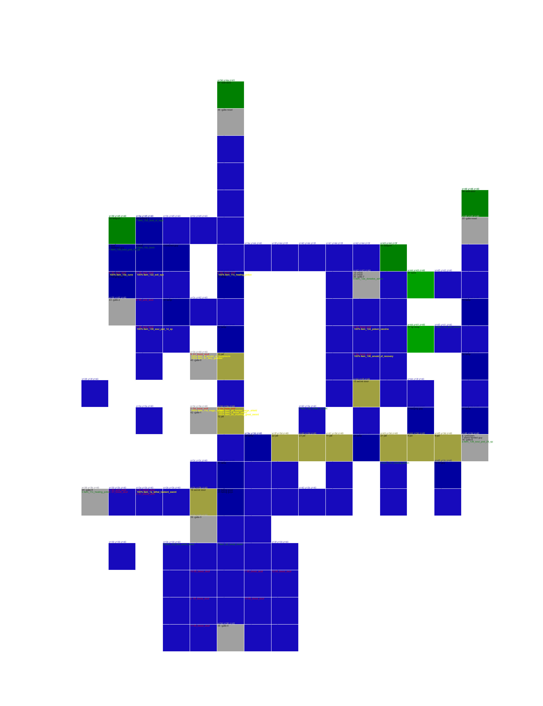
human_world_cursed_region
Item Memory used 14
Creatures attributes 25/65/128
0 100% 0x30 0c_worm_face wd78-130 md103-62 a30 a30 m0
100% item_102_mind_amulet
100% item_99_leg_guard
100% item_af_dark_great_shield
1 100% 0x30 0c_worm_face wd78-130 md103-62 a30 a30 m0
100% item_10a_cune
2 100% 0x35 0a_dark_bishop wd98-87 md255-255 a14 a35 m0
3 100% 0x35 0a_dark_bishop wd98-87 md255-255 a14 a35 m0
4 100% 0x30 01_shadow_spider wd74-101 md91-95 a12 a13 m0
100% item_10a_cune
5 100% 0x35 0a_dark_bishop wd98-87 md255-255 a14 a35 m0
100% item_e9_bracelet_of_movement
6 100% 0x35 0a_dark_bishop wd98-87 md255-255 a14 a35 m0
7 100% 0x35 0a_dark_bishop wd98-87 md255-255 a14 a35 m0
100% item_11e_anti_venom
8 100% 0x35 0a_dark_bishop wd98-87 md255-255 a14 a35 m0
100% item_10a_cune
9 100% 0x30 05_dark_spirits wd124-85 md255-255 a35 a40 m0
a 100% 0x30 05_dark_spirits wd124-85 md255-255 a35 a40 m0
100% item_10a_cune
b 100% 0x30 08_war_demon_1 wd111-105 md255-88 a45 a40 m0
100% item_37_frosty_morning_star
100% item_60_scale_mail
c 100% 0x30 08_war_demon_1 wd111-105 md255-88 a45 a40 m0
100% item_b0_deadly_great_shield
d 100% 0x30 09_demon_bat wd65-88 md104-62 a14 a20 m0
100% item_11c_healing_potion
e 100% 0x30 08_war_demon_1 wd111-105 md255-88 a45 a40 m0
f 100% 0x80 09_demon_bat wd65-88 md104-62 a14 a20 m0
10 100% 0x10 09_demon_bat wd65-88 md104-62 a14 a20 m0
100% item_124_poison_vaccine
21 100% 0x50 0a_guardian_a wd104-55 md143-121 a15 a16 m0
100% item_10a_cune
30 100% 0x30 04_fat_mole_a wd0-0 md0-0 a0 a0 m0
100% item_10a_cune
0 item_11c_healing_potion
1 item_c2_shinning_gothic_shield
2 item_51_full_helm
3 item_fc_amulet_of_movement
4 item_124_poison_vaccine
5 item_11c_healing_potion
6 item_11e_anti_venom
7 item_77_plate_mail_of_rage
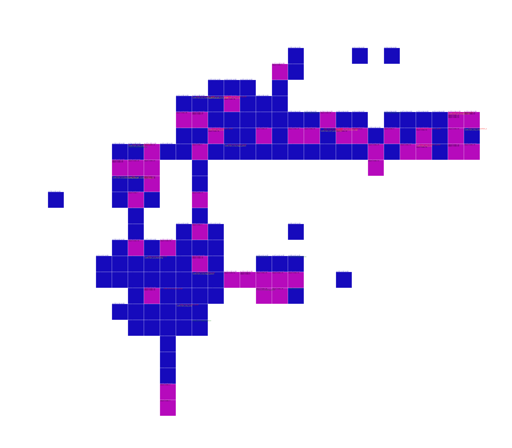
Earth World
earth_world_rotting_cavern
Item Memory used 16
Creatures attributes 194/52/128
0 100% 0x30 06_mystic_tower wd103-72 md65-91 a20 a20 m0
1 100% 0x20 0a_bone_wolf wd91-39 md255-117 a225 a220 m0
100% item_127_acid_vaccine
2 100% 0x20 0a_bone_wolf wd91-39 md255-117 a225 a220 m0
100% item_11d_magic_potion
3 100% 0x20 0a_bone_wolf wd91-39 md255-117 a225 a220 m0
100% item_d_shadow_wolf
4 100% 0x30 09_dementor wd116-98 md88-103 a30 a23 m0
100% item_125_dust_of_rage
5 100% 0x30 09_dementor wd116-98 md88-103 a30 a23 m0
6 100% 0x30 09_dementor wd116-98 md88-103 a30 a23 m0
100% item_11f_anti_paralytic
7 100% 0x20 0a_bone_wolf wd91-39 md255-117 a225 a220 m0
100% item_15_keenest_broad_sword
8 100% 0x40 06_elder wd77-81 md26-47 a14 a14 m0
9 100% 0x40 06_elder wd77-81 md26-47 a14 a14 m0
100% item_dc_caustic_ring
a 100% 0x35 04_minor_dwarf wd65-86 md39-65 a12 a12 m0
b 100% 0x35 04_minor_dwarf wd65-86 md39-65 a12 a12 m0
100% item_115_mermaid_key
c 100% 0x35 04_minor_dwarf wd65-86 md39-65 a12 a12 m0
100% item_79_leather_glove
d 100% 0x20 09_cross_breed wd163-52 md255-255 a25 a30 m0
100% item_11c_healing_potion
e 100% 0x20 09_cross_breed wd163-52 md255-255 a25 a30 m0
100% item_139_soul_pod_14_sp
f 100% 0x20 09_cross_breed wd163-52 md255-255 a25 a30 m0
100% item_c5_summoner_ring_of_fire
10 100% 0x20 09_cross_breed wd163-52 md255-255 a25 a30 m0
100% item_14_crushing_broad_sword
11 100% 0x20 09_cross_breed wd163-52 md255-255 a25 a30 m0
100% item_b7_tower_shield_of_balance
12 100% 0x25 00_master_knight wd79-94 md218-103 a62 a55 m0
13 100% 0x25 00_master_knight wd79-94 md218-103 a62 a55 m0
14 100% 0x25 00_master_knight wd79-94 md218-103 a62 a55 m0
15 100% 0x10 06_oblid wd101-104 md73-43 a43 a35 m0
16 100% 0x10 06_oblid wd101-104 md73-43 a43 a35 m0
17 100% 0x10 06_oblid wd101-104 md73-43 a43 a35 m0
18 100% 0x10 06_oblid wd101-104 md73-43 a43 a35 m0
19 100% 0x20 0c_barrel_snail wd88-55 md26-117 a8 a7 m0
1a 100% 0x20 0c_barrel_snail wd88-55 md26-117 a8 a7 m0
1b 100% 0x60 0e_elder wd77-81 md26-47 a14 a14 m0
1c 100% 0x30 0e_elder wd77-81 md26-47 a14 a14 m0
1d 100% 0x30 0e_elder wd77-81 md26-47 a14 a14 m0
1e 100% 0x30 0e_elder wd77-81 md26-47 a14 a14 m0
20 100% 0x10 04_acid_slime wd57-68 md91-104 a3 a2 m0
30 100% 0x20 0a_blank wd0-0 md0-0 a0 a0 m5
0 item_10a_cune
1 item_62_scale_mail_of_curing
2 item_10a_cune
3 item_c6_ring_of_fire_resist
4 item_11f_anti_paralytic
5 item_126_bottle_of_light
6 item_139_soul_pod_14_sp
7 item_128_spirit_book
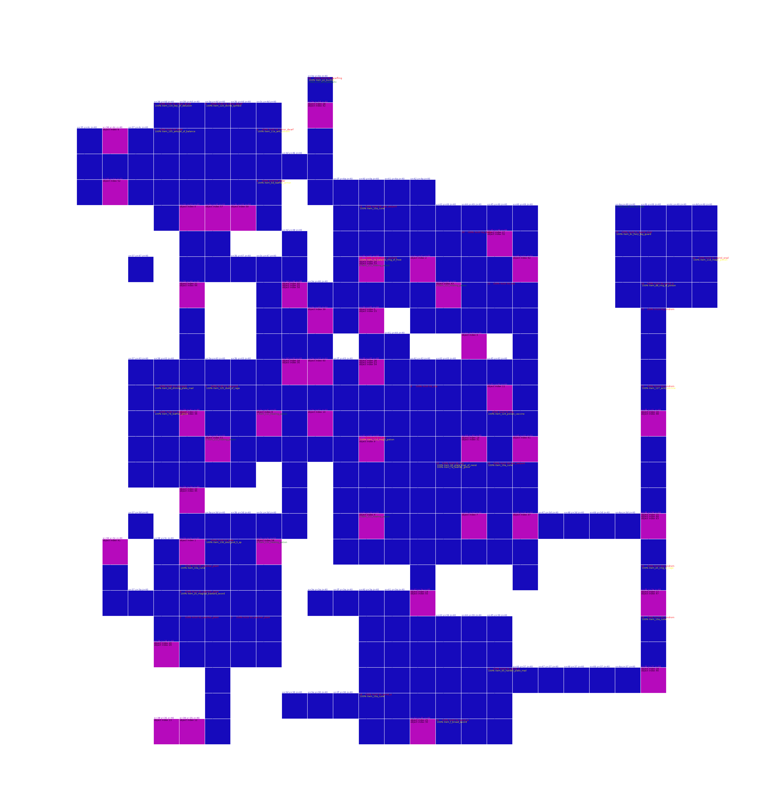
earth_world_poisonous_cavern
Item Memory used 16
Creatures attributes 32/104/128
0 100% 0x15 02_watcher_plant wd39-68 md26-42 a12 a12 m0
100% item_97_steel_boots_of_balance
1 100% 0x15 02_watcher_plant wd39-68 md26-42 a12 a12 m0
100% item_10a_cune
2 100% 0x15 02_watcher_plant wd39-68 md26-42 a12 a12 m0
100% item_123_fire_world_stone
3 100% 0x15 01_blood_skull wd69-73 md98-255 a11 a9 m0
100% item_12e_dorados_ashes
4 100% 0x15 01_blood_skull wd69-73 md98-255 a11 a9 m0
5 100% 0x15 01_blood_skull wd69-73 md98-255 a11 a9 m0
100% item_1e_fiery_bastard_sword
6 100% 0x15 01_blood_skull wd69-73 md98-255 a11 a9 m0
100% item_11c_healing_potion
7 100% 0x15 02_watcher_plant wd39-68 md26-42 a12 a12 m0
100% item_2f_mighty_great_sword
8 100% 0x15 02_watcher_plant wd39-68 md26-42 a12 a12 m0
100% item_11d_magic_potion
9 100% 0x15 02_watcher_plant wd39-68 md26-42 a12 a12 m0
100% item_2e_crushing_great_sword
a 100% 0x15 02_watcher_plant wd39-68 md26-42 a12 a12 m0
100% item_8f_hard_boots
b 100% 0x50 05_blood_brain wd104-114 md103-147 a14 a14 m0
100% item_12e_dorados_ashes
c 100% 0x60 05_blood_brain wd104-114 md103-147 a14 a14 m0
100% item_bb_gothic_shield
d 100% 0x40 06_hell_warrior wd117-130 md52-104 a230 a200 m0
100% item_124_poison_vaccine
e 100% 0x40 06_hell_warrior wd117-130 md52-104 a230 a200 m0
f 100% 0x40 06_hell_warrior wd117-130 md52-104 a230 a200 m0
10 100% 0x15 0c_hanging_dead wd65-42 md55-39 a5 a5 m0
11 100% 0x15 0c_hanging_dead wd65-42 md55-39 a5 a5 m0
12 100% 0x15 0c_hanging_dead wd65-42 md55-39 a5 a5 m0
13 100% 0x15 0c_hanging_dead wd65-42 md55-39 a5 a5 m0
14 100% 0x15 0c_hanging_dead wd65-42 md55-39 a5 a5 m0
15 100% 0x15 0c_hanging_dead wd65-42 md55-39 a5 a5 m0
16 100% 0x20 06_skeleton wd72-44 md95-113 a15 a14 m0
17 100% 0x20 06_skeleton wd72-44 md95-113 a15 a14 m0
18 100% 0x20 06_skeleton wd72-44 md95-113 a15 a14 m0
19 100% 0x30 0d_trickster wd101-137 md94-60 a15 a18 m0
1a 100% 0x30 0d_trickster wd101-137 md94-60 a15 a18 m0
1b 100% 0x30 0d_trickster wd101-137 md94-60 a15 a18 m0
1d 100% 0x20 02_watcher_plant wd39-68 md26-42 a12 a12 m0
1e 100% 0x30 0d_trickster wd101-137 md94-60 a15 a18 m0
1f 100% 0x30 0d_trickster wd101-137 md94-60 a15 a18 m0
20 100% 0x10 00_duhrin wd85-161 md91-112 a0 a0 m8
30 100% 0x20 05_blank wd0-0 md0-0 a0 a0 m0
31 100% 0x70 04_auriel_b wd195-208 md85-85 a75 a70 m9
32 100% 0x50 0b_blank wd0-0 md0-0 a0 a0 m0
33 100% 0x50 0a_blank wd0-0 md0-0 a0 a0 m7
0 item_11c_healing_potion
1 item_11f_anti_paralytic
2 item_11c_healing_potion
3 item_11c_healing_potion
5 item_10c_torch
6 item_e1_ring_of_dark_souls
7 item_136_soul_pod_5_sp
8 item_139_soul_pod_14_sp
a item_127_acid_vaccine
b item_11c_healing_potion
1c item_127_acid_vaccine
1d item_11c_healing_potion
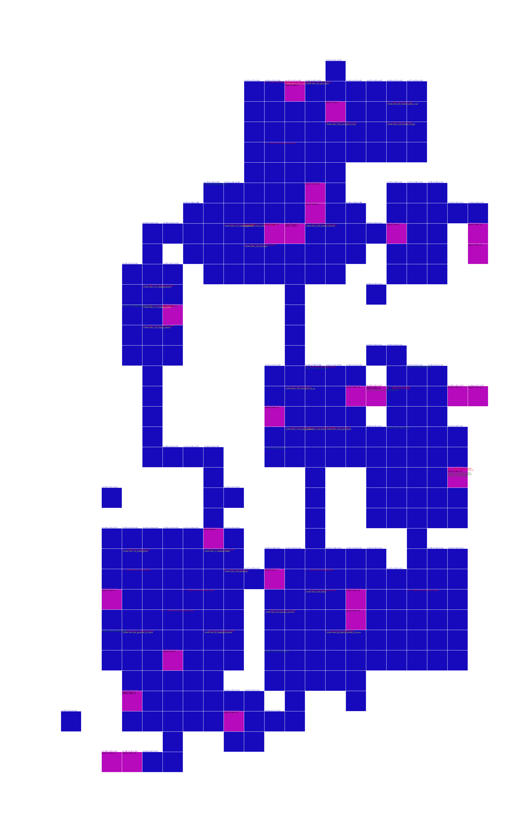
earth_world_stone_cavern
Item Memory used 16
Creatures attributes 15/90/128
0 100% 0x60 0c_maristella wd59-65 md75-101 a20 a30 m0
100% item_10a_cune
1 100% 0x50 0c_maristella wd59-65 md75-101 a20 a30 m0
100% item_36_swift_morning_star
2 100% 0x50 0c_maristella wd59-65 md75-101 a20 a30 m0
100% item_10a_cune
3 100% 0x30 05_hobble_worm wd78-111 md59-47 a25 a20 m0
4 100% 0x30 05_hobble_worm wd78-111 md59-47 a25 a20 m0
5 100% 0x30 05_hobble_worm wd78-111 md59-47 a25 a20 m0
6 100% 0x30 05_hobble_worm wd78-111 md59-47 a25 a20 m0
100% item_120_divine_symbol
7 100% 0x30 05_hobble_worm wd78-111 md59-47 a25 a20 m0
100% item_96_swift_steel_boots
8 100% 0x30 05_hobble_worm wd78-111 md59-47 a25 a20 m0
9 100% 0x30 05_hobble_worm wd78-111 md59-47 a25 a20 m0
100% item_8a_arm_guard_of_composure
a 100% 0x40 0a_barrel_snail wd104-91 md78-124 a23 a20 m0
100% item_124_poison_vaccine
b 100% 0x40 0a_barrel_snail wd104-91 md78-124 a23 a20 m0
c 100% 0x25 08_clay_servant wd172-179 md65-91 a27 a26 m0
d 100% 0x25 08_clay_servant wd172-179 md65-91 a27 a26 m0
100% item_127_acid_vaccine
e 100% 0x25 08_clay_servant wd172-179 md65-91 a27 a26 m0
f 100% 0x25 08_clay_servant wd172-179 md65-91 a27 a26 m0
100% item_5d_leather_armor
10 100% 0x40 0a_barrel_snail wd104-91 md78-124 a23 a20 m0
11 100% 0x40 0a_barrel_snail wd104-91 md78-124 a23 a20 m0
100% item_df_ring_of_desire
12 100% 0x40 0a_barrel_snail wd104-91 md78-124 a23 a20 m0
13 100% 0x25 0c_dybbuk wd85-78 md104-101 a12 a14 m10
100% item_fe_deadly_amulet
14 100% 0x20 0c_saurian_warrior_a wd53-94 md255-255 a36 a50 m0
15 100% 0x20 0c_saurian_warrior_a wd53-94 md255-255 a36 a50 m0
100% item_123_fire_world_stone
16 100% 0x20 0c_saurian_warrior_a wd53-94 md255-255 a36 a50 m0
17 100% 0x80 0c_saurian_warrior_a wd53-94 md255-255 a36 a50 m0
30 100% 0x50 00_dybbuk wd78-91 md104-101 a12 a14 m10
31 100% 0x0 04_dybbuk wd78-91 md104-101 a12 a14 m10
32 100% 0x0 04_dybbuk wd78-91 md104-101 a12 a14 m10
0 item_11d_magic_potion
1 item_9a_leg_guard
2 item_10c_torch
3 item_120_divine_symbol
4 item_136_soul_pod_5_sp
5 item_124_poison_vaccine
6 item_128_spirit_book
7 item_139_soul_pod_14_sp
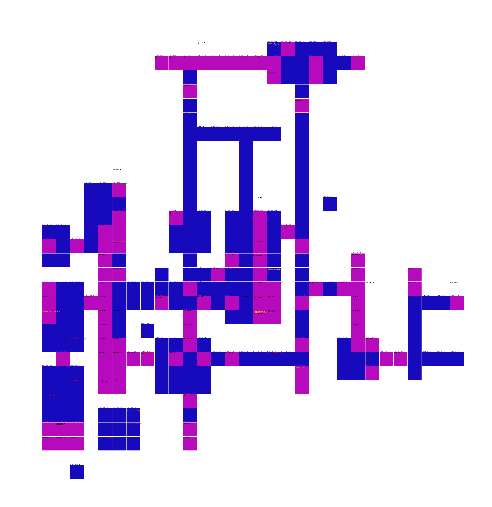
earth_world_quaking_cavern
Item Memory used 16
Creatures attributes 36/57/128
0 100% 0x30 00_acid_slime wd57-68 md91-104 a3 a2 m0
100% item_19_bastard_sword
1 100% 0x30 00_acid_slime wd57-68 md91-104 a3 a2 m0
100% item_11f_anti_paralytic
2 100% 0x30 00_acid_slime wd57-68 md91-104 a3 a2 m0
100% item_6d_shining_plate_mail
3 100% 0x30 00_acid_slime wd57-68 md91-104 a3 a2 m0
100% item_9b_harden_leg_guard
4 100% 0x30 00_acid_slime wd57-68 md91-104 a3 a2 m0
100% item_136_soul_pod_5_sp
5 100% 0x30 00_acid_slime wd57-68 md91-104 a3 a2 m0
100% item_d9_ring_of_protect
6 100% 0x60 05_water_knight wd98-85 md103-116 a40 a36 m0
100% item_d8_ring_of_poison
7 100% 0x10 05_water_knight wd98-85 md103-116 a40 a36 m0
8 100% 0x10 05_water_knight wd98-85 md103-116 a40 a36 m0
9 100% 0x10 05_water_knight wd98-85 md103-116 a40 a36 m0
100% item_125_dust_of_rage
a 100% 0x10 05_water_knight wd98-85 md103-116 a40 a36 m0
b 100% 0x90 08_casket wd91-104 md255-255 a20 a25 m0
100% item_f0_guardian_bracelet
c 100% 0x35 02_horned_slime wd104-101 md116-94 a14 a14 m0
d 100% 0x35 02_horned_slime wd104-101 md116-94 a14 a14 m0
100% item_10e_sacred_feather
e 100% 0x35 02_horned_slime wd104-101 md116-94 a14 a14 m0
100% item_82_caustic_hand_guard
f 100% 0x30 08_casket wd91-104 md255-255 a20 a25 m0
100% item_127_acid_vaccine
10 100% 0x30 08_casket wd91-104 md255-255 a20 a25 m0
100% item_12e_dorados_ashes
11 100% 0x30 08_casket wd91-104 md255-255 a20 a25 m0
12 100% 0x30 0e_dinogon wd83-75 md52-133 a42 a38 m0
13 100% 0x30 0e_dinogon wd83-75 md52-133 a42 a38 m0
14 100% 0x30 0e_dinogon wd83-75 md52-133 a42 a38 m0
15 100% 0x30 0e_dinogon wd83-75 md52-133 a42 a38 m0
16 100% 0x40 06_fire_jinn wd81-81 md70-85 a20 a20 m0
17 100% 0x40 06_fire_jinn wd81-81 md70-85 a20 a20 m0
18 100% 0x40 06_fire_jinn wd81-81 md70-85 a20 a20 m0
20 100% 0x10 02_blood_brain wd104-114 md103-147 a14 a14 m0
21 100% 0x10 02_blood_brain wd104-114 md103-147 a14 a14 m0
22 100% 0x10 02_blood_brain wd104-114 md103-147 a14 a14 m0
0 item_11e_anti_venom
1 item_125_dust_of_rage
2 item_10a_cune
3 item_11c_healing_potion
4 item_124_poison_vaccine
5 item_11f_anti_paralytic
6 item_10a_cune
7 item_10a_cune
8 item_11c_healing_potion
9 item_ef_deadly_bracelet
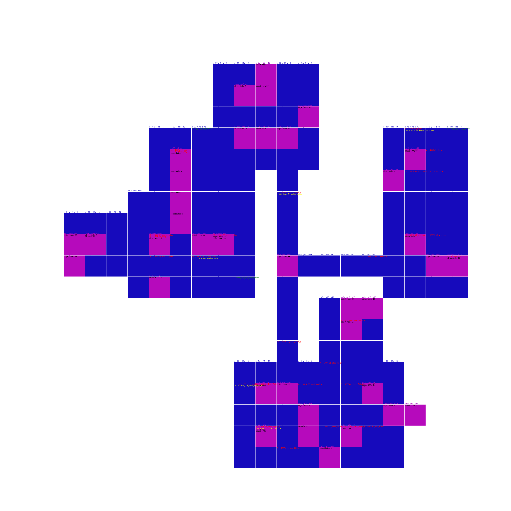
earth_world_false_pit_cavern
Item Memory used 16
Creatures attributes 36/65/128
0 100% 0x50 00_red_puppet wd98-85 md255-255 a35 a40 m0
100% item_4_long_sword
1 100% 0x50 0c_ray_plant wd137-59 md117-91 a16 a15 m0
100% item_11c_healing_potion
2 100% 0x10 0c_ray_plant wd137-59 md117-91 a16 a15 m0
3 100% 0x10 0c_ray_plant wd137-59 md117-91 a16 a15 m0
4 100% 0x10 0c_ray_plant wd137-59 md117-91 a16 a15 m0
100% item_1d_crushing_bastard_sword
5 100% 0x10 0c_ray_plant wd137-59 md117-91 a16 a15 m0
6 100% 0x10 00_night_howler wd68-85 md108-96 a34 a27 m0
7 100% 0x10 00_night_howler wd68-85 md108-96 a34 a27 m0
100% item_10a_cune
8 100% 0x10 00_night_howler wd68-85 md108-96 a34 a27 m0
100% item_28_great_sword
9 100% 0x20 04_cannon_snail wd81-130 md59-60 a20 a17 m0
100% item_18_bastard_sword
a 100% 0x20 04_cannon_snail wd81-130 md59-60 a20 a17 m0
100% item_117_brass_key
b 100% 0x30 08_guardian_b wd78-55 md231-233 a15 a16 m0
c 100% 0x30 08_guardian_b wd78-55 md231-233 a15 a16 m0
d 100% 0x20 05_horned_skull wd78-65 md52-91 a26 a26 m0
e 100% 0x20 05_horned_skull wd78-65 md52-91 a26 a26 m0
f 100% 0x20 05_horned_skull wd78-65 md52-91 a26 a26 m0
10 100% 0x20 05_horned_skull wd78-65 md52-91 a26 a26 m0
11 100% 0x50 09_blood_slime wd68-70 md131-255 a5 a4 m0
12 100% 0x50 04_dark_spirits wd98-85 md255-255 a35 a40 m0
13 100% 0x10 04_dark_spirits wd98-85 md255-255 a35 a40 m0
14 100% 0x10 04_dark_spirits wd98-85 md255-255 a35 a40 m0
15 100% 0x10 04_dark_spirits wd98-85 md255-255 a35 a40 m0
16 100% 0x10 04_dark_spirits wd98-85 md255-255 a35 a40 m0
0 item_9f_caustic_leg_guard
1 item_136_soul_pod_5_sp
2 item_11c_healing_potion
3 item_2b_fiery_great_sword
4 item_138_soul_pod_29_sp
5 item_120_divine_symbol
6 item_56_great_helm
7 item_12e_dorados_ashes
8 item_11e_anti_venom
9 item_10d_lamp
a item_136_soul_pod_5_sp
b item_11f_anti_paralytic
c item_12e_dorados_ashes
d item_12e_dorados_ashes
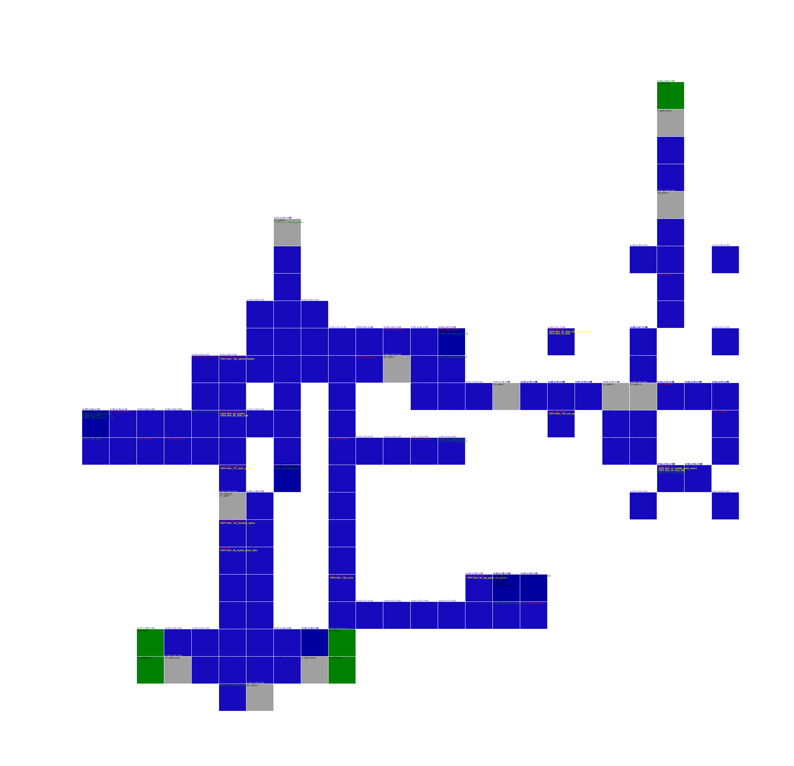
earth_world_hostile_rock_cavern
Item Memory used 8
Creatures attributes 20/65/85
0 100% 0x30 01_earth_knight wd101-99 md91-73 a30 a26 m0
100% item_11c_healing_potion
1 100% 0x30 01_earth_knight wd101-99 md91-73 a30 a26 m0
100% item_9_rapier
2 100% 0x30 01_earth_knight wd101-99 md91-73 a30 a26 m0
3 100% 0x30 01_earth_knight wd101-99 md91-73 a30 a26 m0
100% item_c4_summoner_ring_of_fire
4 100% 0x60 05_earth_knight wd101-99 md91-73 a30 a26 m0
5 100% 0x60 05_earth_knight wd101-99 md91-73 a30 a26 m0
100% item_10a_cune
6 100% 0x30 04_kiljoy wd52-78 md78-59 a20 a20 m0
100% item_11c_healing_potion
7 100% 0x30 04_kiljoy wd52-78 md78-59 a20 a20 m0
8 100% 0x30 04_kiljoy wd52-78 md78-59 a20 a20 m0
100% item_11c_healing_potion
9 100% 0x30 04_kiljoy wd52-78 md78-59 a20 a20 m0
100% item_10a_cune
a 100% 0x30 04_kiljoy wd52-78 md78-59 a20 a20 m0
21 100% 0x10 04_dread_knight wd150-130 md195-169 a45 a40 m11
100% item_74_plate_mail_of_honor
100% item_7e_metal_glove
0 item_75_harden_full_plate
1 item_11c_healing_potion
2 item_11c_healing_potion
3 item_8e_leather_boots
4 item_11e_anti_venom
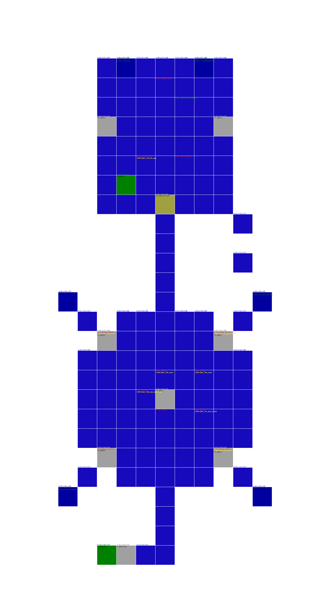
Fire World
fire_world_burning_cavern
Item Memory used 15
Creatures attributes 30/98/128
0 100% 0x30 04_acid_skull wd72-78 md116-111 a12 a10 m0
100% item_11c_healing_potion
1 100% 0x30 04_acid_skull wd72-78 md116-111 a12 a10 m0
100% item_10a_cune
2 100% 0x50 04_acid_skull wd72-78 md116-111 a12 a10 m0
3 100% 0x30 04_acid_skull wd72-78 md116-111 a12 a10 m0
100% item_fa_moon_bracelet
100% item_4d_helm
4 100% 0x30 04_acid_skull wd72-78 md116-111 a12 a10 m0
100% item_12c_pitcher_of_nadya_hp
5 100% 0x30 04_acid_skull wd72-78 md116-111 a12 a10 m0
100% item_eb_bracelet_of_curing
100% item_91_steel_boots
6 100% 0x80 09_dwarf_warrior wd121-111 md62-88 a15 a15 m0
100% item_12a_young_dragon_gem
7 100% 0x30 09_dwarf_warrior wd121-111 md62-88 a15 a15 m0
8 100% 0x30 09_dwarf_warrior wd121-111 md62-88 a15 a15 m0
9 100% 0x50 0a_old_face wd78-195 md255-255 a200 a240 m0
100% item_11e_anti_venom
a 100% 0x60 09_dwarf_warrior wd121-111 md62-88 a15 a15 m0
100% item_7_fiery_long_sword
b 100% 0x60 09_dwarf_warrior wd121-111 md62-88 a15 a15 m0
100% item_10a_cune
c 100% 0x60 09_dwarf_warrior wd121-111 md62-88 a15 a15 m0
100% item_6b_frosty_plate_mail
d 100% 0x60 09_dwarf_warrior wd121-111 md62-88 a15 a15 m0
e 100% 0x60 04_berzerker wd85-59 md26-94 a35 a28 m0
100% item_131_flaming_key
f 100% 0x60 04_berzerker wd85-59 md26-94 a35 a28 m0
10 100% 0x60 01_beak_plant wd39-78 md60-53 a15 a15 m0
100% item_139_soul_pod_14_sp
11 100% 0x90 04_berzerker wd85-59 md26-94 a35 a28 m0
12 100% 0x90 04_berzerker wd85-59 md26-94 a35 a28 m0
100% item_11c_healing_potion
13 100% 0x40 05_horned_slime wd104-101 md116-94 a14 a14 m0
100% item_10a_cune
14 100% 0x40 05_horned_slime wd104-101 md116-94 a14 a14 m0
100% item_11d_magic_potion
15 100% 0x30 05_horned_slime wd104-101 md116-94 a14 a14 m0
100% item_11c_healing_potion
16 100% 0x40 0d_tondrom wd176-133 md59-86 a15 a14 m0
100% item_fd_amulet_of_guardian
17 100% 0x40 0d_tondrom wd176-133 md59-86 a15 a14 m0
100% item_11c_healing_potion
18 100% 0x40 0d_tondrom wd176-133 md59-86 a15 a14 m0
100% item_11c_healing_potion
19 100% 0x40 0d_tondrom wd176-133 md59-86 a15 a14 m0
100% item_d5_dark_priest_ring
1a 100% 0x30 05_horned_slime wd104-101 md116-94 a14 a14 m0
100% item_11c_healing_potion
0 item_139_soul_pod_14_sp
1 item_10a_cune
2 item_10a_cune
3 item_11c_healing_potion
4 item_11c_healing_potion
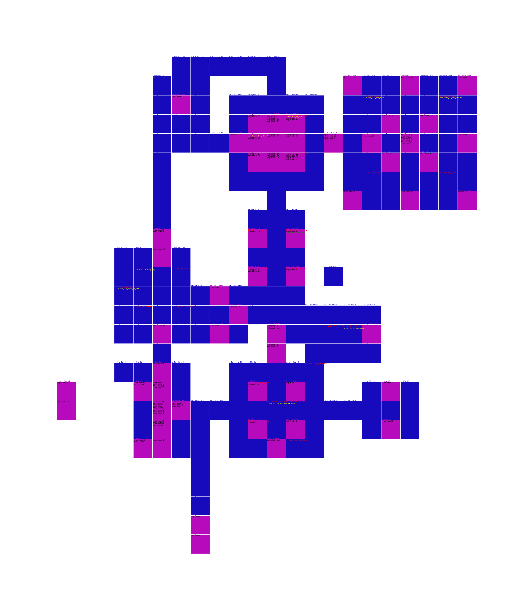
fire_world_molten_cavern
Item Memory used 16
Creatures attributes 79/120/128
0 100% 0x20 09_war_demon_2 wd107-94 md86-103 a45 a40 m0
1 100% 0x30 09_war_demon_2 wd107-94 md86-103 a45 a40 m0
100% item_136_soul_pod_5_sp
2 100% 0x30 09_war_demon_2 wd107-94 md86-103 a45 a40 m0
100% item_f9_king_bracelet
3 100% 0x60 09_war_demon_2 wd107-94 md86-103 a45 a40 m0
4 100% 0x30 09_war_demon_2 wd107-94 md86-103 a45 a40 m0
5 100% 0x30 09_war_demon_2 wd107-94 md86-103 a45 a40 m0
100% item_111_kings_key
6 100% 0x20 0e_watcher_plant wd39-68 md26-42 a12 a12 m0
100% item_c1_gothic_shield_of_rage
7 100% 0x20 0e_watcher_plant wd39-68 md26-42 a12 a12 m0
8 100% 0x20 0e_watcher_plant wd39-68 md26-42 a12 a12 m0
100% item_10a_cune
9 100% 0x60 0d_damned_angel wd78-91 md255-255 a30 a40 m0
a 100% 0x60 0d_damned_angel wd78-91 md255-255 a30 a40 m0
b 100% 0x60 0d_damned_angel wd78-91 md255-255 a30 a40 m0
100% item_10a_cune
c 100% 0x60 0d_damned_angel wd78-91 md255-255 a30 a40 m0
100% item_11c_healing_potion
d 100% 0x60 0d_damned_angel wd78-91 md255-255 a30 a40 m0
100% item_6e_dark_plate_mail
e 100% 0x30 00_kabasaur wd100-117 md124-103 a40 a34 m0
100% item_89_arm_guard
f 100% 0x30 00_kabasaur wd100-117 md124-103 a40 a34 m0
10 100% 0x30 00_kabasaur wd100-117 md124-103 a40 a34 m0
100% item_5b_quilted_armor
11 100% 0x30 01_chirper wd77-103 md122-91 a24 a20 m0
12 100% 0x30 01_chirper wd77-103 md122-91 a24 a20 m0
13 100% 0x30 01_chirper wd77-103 md122-91 a24 a20 m0
100% item_de_caustic_sorcerer_ring
14 100% 0x30 01_chirper wd77-103 md122-91 a24 a20 m0
15 100% 0x30 01_chirper wd77-103 md122-91 a24 a20 m0
100% item_11c_healing_potion
16 100% 0x30 01_chirper wd77-103 md122-91 a24 a20 m0
100% item_a6_large_shield
100% item_63_plate_mail
21 100% 0x10 02_dead_abraxus wd241-241 md52-156 a80 a90 m12
100% item_ce_soul_ring
100% item_33_crushing_mace
30 100% 0x10 00_abraxus wd111-111 md13-130 a80 a90 m12
100% item_52_full_helm_of_curing
31 100% 0x5 0c_fat_mole_c wd0-0 md0-0 a0 a0 m13
100% item_139_soul_pod_14_sp
32 100% 0x5 08_fat_mole_b wd0-0 md0-0 a0 a0 m13
100% item_10a_cune
0 item_11c_healing_potion
1 item_12e_dorados_ashes
2 item_11f_anti_paralytic
3 item_139_soul_pod_14_sp
4 item_139_soul_pod_14_sp
5 item_137_soul_pod_53_sp
6 item_136_soul_pod_5_sp
7 item_49_crown_of_resist
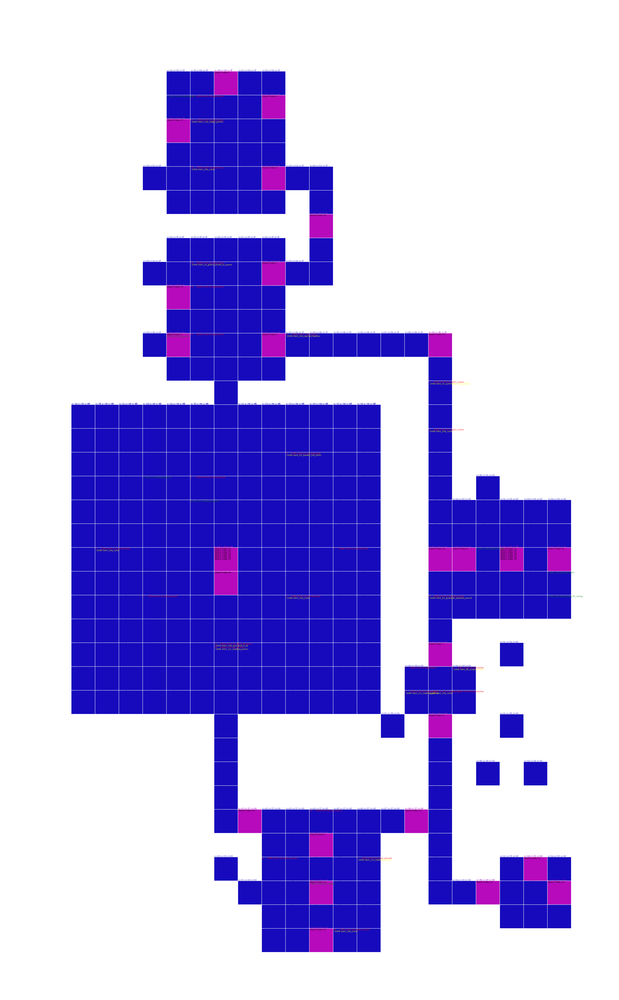
fire_world_phoenix_cave
Item Memory used 16
Creatures attributes 50/64/128
0 100% 0x80 04_king_hopper wd59-111 md18-203 a59 a59 m0
100% item_11f_anti_paralytic
1 100% 0x40 04_king_hopper wd59-111 md18-203 a59 a59 m0
100% item_66_plate_mail_of_resist
2 100% 0x40 04_king_hopper wd59-111 md18-203 a59 a59 m0
3 100% 0x80 04_king_hopper wd59-111 md18-203 a59 a59 m0
100% item_12e_dorados_ashes
4 100% 0x80 04_king_hopper wd59-111 md18-203 a59 a59 m0
100% item_11c_healing_potion
5 100% 0x40 04_king_hopper wd59-111 md18-203 a59 a59 m0
100% item_127_acid_vaccine
6 100% 0x80 04_zygote wd111-127 md57-103 a40 a36 m0
7 100% 0x40 04_zygote wd111-127 md57-103 a40 a36 m0
100% item_8c_master_arm_guard
8 100% 0x40 04_zygote wd111-127 md57-103 a40 a36 m0
100% item_24_dark_sword
9 100% 0x40 04_zygote wd111-127 md57-103 a40 a36 m0
a 100% 0x80 0d_death_serpent wd127-112 md62-56 a60 a55 m0
100% item_bf_master_gothic_shield
b 100% 0x80 0d_death_serpent wd127-112 md62-56 a60 a55 m0
100% item_125_dust_of_rage
c 100% 0x40 0d_death_serpent wd127-112 md62-56 a60 a55 m0
100% item_86_gauntlet_of_resist
d 100% 0x40 04_zygote wd111-127 md57-103 a40 a36 m0
e 100% 0x80 0d_death_serpent wd127-112 md62-56 a60 a55 m0
f 100% 0x40 0c_death_mage wd91-86 md255-255 a75 a85 m0
10 100% 0x80 04_zygote wd111-127 md57-103 a40 a36 m0
11 100% 0x40 04_zygote wd111-127 md57-103 a40 a36 m0
12 100% 0x40 04_zygote wd111-127 md57-103 a40 a36 m0
13 100% 0x80 04_zygote wd111-127 md57-103 a40 a36 m0
14 100% 0x80 04_zygote wd111-127 md57-103 a40 a36 m0
0 item_11c_healing_potion
1 item_11c_healing_potion
2 item_10a_cune
3 item_11c_healing_potion
4 item_10e_sacred_feather
5 item_10a_cune
6 item_10c_torch
7 item_11c_healing_potion
8 item_137_soul_pod_53_sp
9 item_11c_healing_potion
a item_10d_lamp
b item_11c_healing_potion
c item_127_acid_vaccine
d item_11e_anti_venom
e item_125_dust_of_rage

fire_world_ashen_cavern
Item Memory used 16
Creatures attributes 23/110/141
0 100% 0x50 01_berzerker wd85-59 md26-94 a35 a28 m0
100% item_d3_dark_ring
1 100% 0x50 01_berzerker wd85-59 md26-94 a35 a28 m0
100% item_103_sorcerer_amulet
2 100% 0x50 01_berzerker wd85-59 md26-94 a35 a28 m0
100% item_1a_lethal_bastard_sword
3 100% 0x50 09_dark_fairy wd72-98 md255-255 a20 a24 m0
100% item_3f_battle_axe
4 100% 0x50 09_dark_fairy wd72-98 md255-255 a20 a24 m0
5 100% 0x50 01_berzerker wd85-59 md26-94 a35 a28 m0
100% item_41_keenest_battle_axe
6 100% 0x50 01_berzerker wd85-59 md26-94 a35 a28 m0
100% item_11d_magic_potion
7 100% 0x50 01_berzerker wd85-59 md26-94 a35 a28 m0
100% item_10c_torch
8 100% 0x50 09_dark_fairy wd72-98 md255-255 a20 a24 m0
100% item_a3_small_shield
9 100% 0x50 08_torg wd57-82 md35-69 a30 a20 m0
100% item_120_divine_symbol
a 100% 0x50 08_torg wd57-82 md35-69 a30 a20 m0
b 100% 0x50 08_torg wd57-82 md35-69 a30 a20 m0
100% item_11c_healing_potion
c 100% 0x5 0d_bugler wd91-91 md78-255 a170 a180 m0
100% item_120_divine_symbol
d 100% 0x50 06_tongue_imp wd68-46 md85-117 a12 a15 m0
e 100% 0x50 06_tongue_imp wd68-46 md85-117 a12 a15 m0
100% item_126_bottle_of_light
f 100% 0x50 06_tongue_imp wd68-46 md85-117 a12 a15 m0
100% item_d2_holy_ring
10 100% 0x50 08_torg wd57-82 md35-69 a30 a20 m0
11 100% 0x50 08_torg wd57-82 md35-69 a30 a20 m0
100% item_107_star_amulet
12 100% 0x50 0a_ruby_demon wd91-52 md26-62 a34 a27 m0
100% item_10a_cune
13 100% 0x50 0a_ruby_demon wd91-52 md26-62 a34 a27 m0
14 100% 0x50 09_cerberus wd85-111 md57-111 a30 a30 m0
100% item_123_fire_world_stone
15 100% 0x50 09_cerberus wd85-111 md57-111 a30 a30 m0
100% item_10a_cune
16 100% 0x50 09_cerberus wd85-111 md57-111 a30 a30 m0
100% item_53_harden_full_helm
17 100% 0x50 09_cerberus wd85-111 md57-111 a30 a30 m0
20 100% 0x100 0c_ebony_knight wd126-163 md98-142 a70 a50 m14
0 item_11c_healing_potion
1 item_11c_healing_potion
2 item_10a_cune
3 item_11c_healing_potion
4 item_c8_sorcerer_ring_of_fire
6 item_59_mystic_great_helm
7 item_128_spirit_book
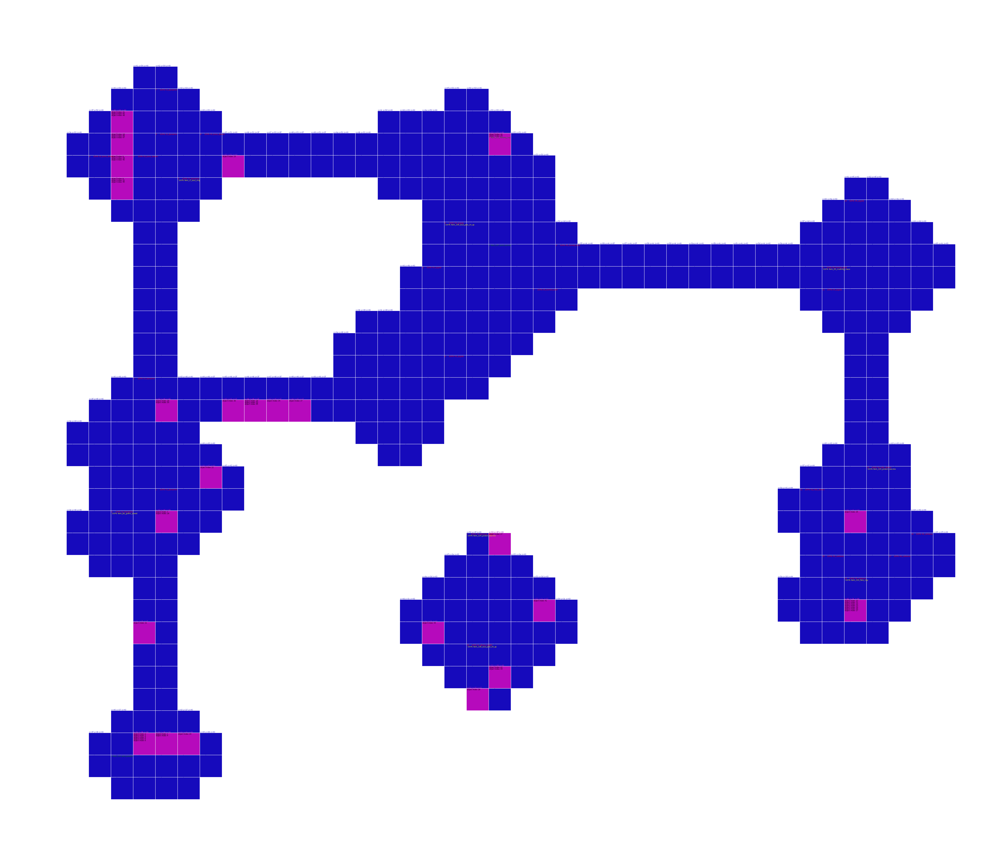
Water World
water_world_impure_pool_area
Item Memory used 16
Creatures attributes 35/65/128
0 100% 0x30 01_horned_slime wd104-101 md116-94 a14 a14 m0
100% item_e3_ring_of_seal
1 100% 0x30 01_horned_slime wd104-101 md116-94 a14 a14 m0
100% item_128_spirit_book
2 100% 0x30 01_horned_slime wd104-101 md116-94 a14 a14 m0
100% item_11d_magic_potion
3 100% 0x30 01_horned_slime wd104-101 md116-94 a14 a14 m0
4 100% 0x30 01_horned_slime wd104-101 md116-94 a14 a14 m0
100% item_136_soul_pod_5_sp
5 100% 0x15 02_sand_leech_b wd113-130 md156-255 a24 a24 m0
100% item_a4_small_shield
6 100% 0x30 02_sand_leech_b wd113-130 md156-255 a24 a24 m0
100% item_10a_cune
7 100% 0x30 02_sand_leech_b wd113-130 md156-255 a24 a24 m0
100% item_5e_leather_armor
8 100% 0x30 02_sand_leech_b wd113-130 md156-255 a24 a24 m0
9 100% 0x30 02_sand_leech_b wd113-130 md156-255 a24 a24 m0
100% item_11f_anti_paralytic
a 100% 0x30 05_dwarfling wd65-65 md101-59 a12 a12 m6
100% item_11d_magic_potion
b 100% 0x30 05_dwarfling wd65-65 md101-59 a12 a12 m6
100% item_a0_holy_leg_guard
c 100% 0x30 0d_dweller wd107-114 md26-104 a24 a22 m0
100% item_29_great_sword
d 100% 0x30 05_dwarfling wd65-65 md101-59 a12 a12 m6
100% item_3_long_sword
e 100% 0x30 05_dwarfling wd65-65 md101-59 a12 a12 m6
100% item_124_poison_vaccine
f 100% 0x30 0d_dweller wd107-114 md26-104 a24 a22 m0
10 100% 0x30 09_armored_warrior wd91-104 md52-52 a85 a60 m0
100% item_139_soul_pod_14_sp
11 100% 0x30 09_armored_warrior wd91-104 md52-52 a85 a60 m0
12 100% 0x30 09_armored_warrior wd91-104 md52-52 a85 a60 m0
100% item_11d_magic_potion
13 100% 0x50 00_dark_spider wd65-49 md65-74 a8 a8 m0
14 100% 0x50 00_dark_spider wd65-49 md65-74 a8 a8 m0
100% item_d6_dark_sorcerer_ring
15 100% 0x40 02_karasu wd81-85 md94-103 a69 a65 m0
100% item_6c_caustic_plate_mail
16 100% 0x40 02_karasu wd81-85 md94-103 a69 a65 m0
17 100% 0x30 0d_hatchlin wd153-81 md255-255 a20 a20 m0
18 100% 0x40 02_karasu wd81-85 md94-103 a69 a65 m0
19 100% 0x40 02_karasu wd81-85 md94-103 a69 a65 m0
1a 100% 0x40 02_karasu wd81-85 md94-103 a69 a65 m0
1b 100% 0x40 02_karasu wd81-85 md94-103 a69 a65 m0
1c 100% 0x40 02_karasu wd81-85 md94-103 a69 a65 m0
30 100% 0x5 00_fat_mole_f wd0-0 md0-0 a0 a0 m24
31 100% 0x5 04_blank wd90-90 md90-90 a0 a0 m25
0 item_12d_pitcher_of_nadya_mp
1 item_123_fire_world_stone
2 item_cd_sorcerer_ring_of_frost
3 item_11c_healing_potion
4 item_11c_healing_potion
5 item_10a_cune
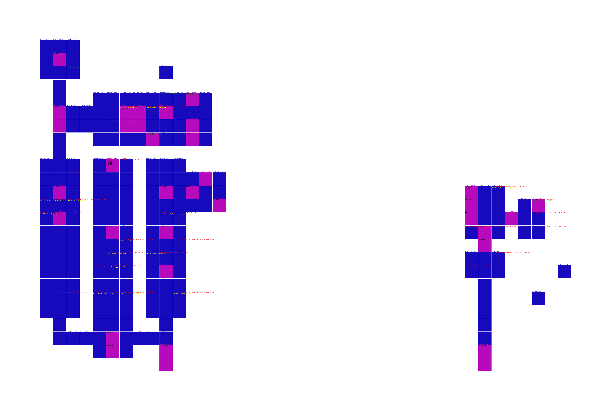
water_world_sunken_river_area
Item Memory used 13
Creatures attributes 30/61/128
0 100% 0x50 04_jinn_lord wd104-122 md70-182 a30 a30 m0
100% item_10a_cune
1 100% 0x50 04_jinn_lord wd104-122 md70-182 a30 a30 m0
100% item_10a_cune
2 100% 0x50 04_jinn_lord wd104-122 md70-182 a30 a30 m0
100% item_10a_cune
3 100% 0x40 00_black_onyx wd91-52 md255-255 a26 a28 m0
100% item_10a_cune
4 100% 0x70 00_black_onyx wd91-52 md255-255 a26 a28 m0
100% item_11c_healing_potion
5 100% 0x40 04_kabasaur wd100-117 md124-103 a40 a34 m0
6 100% 0x40 04_kabasaur wd100-117 md124-103 a40 a34 m0
100% item_10a_cune
7 100% 0x40 04_kabasaur wd100-117 md124-103 a40 a34 m0
8 100% 0x40 04_kabasaur wd100-117 md124-103 a40 a34 m0
100% item_f4_bracelet_of_composure
9 100% 0x40 04_kabasaur wd100-117 md124-103 a40 a34 m0
100% item_c7_priest_ring_of_fire
100% item_92_steel_boots_of_resist
a 100% 0x40 00_black_onyx wd91-52 md255-255 a26 a28 m0
100% item_10a_cune
b 100% 0x40 00_black_onyx wd91-52 md255-255 a26 a28 m0
100% item_104_priest_amulet
100% item_4a_crown_of_composure
c 100% 0x40 00_black_onyx wd91-52 md255-255 a26 a28 m0
100% item_11c_healing_potion
0 item_138_soul_pod_29_sp
1 item_11d_magic_potion
2 item_11c_healing_potion
3 item_10c_torch
4 item_11e_anti_venom
5 item_10c_torch
6 item_11c_healing_potion
7 item_11d_magic_potion
1c item_126_bottle_of_light
1d item_127_acid_vaccine

water_world_white_rain_area
Item Memory used 8
Creatures attributes 11/78/128
0 100% 0x30 05_blood_skull wd69-73 md98-255 a11 a9 m0
1 100% 0x30 05_blood_skull wd69-73 md98-255 a11 a9 m0
100% item_10a_cune
2 100% 0x30 05_blood_skull wd69-73 md98-255 a11 a9 m0
100% item_10a_cune
3 100% 0x60 05_blood_skull wd69-73 md98-255 a11 a9 m0
4 100% 0x30 05_blood_skull wd69-73 md98-255 a11 a9 m0
5 100% 0x30 05_blood_skull wd69-73 md98-255 a11 a9 m0
100% item_100_amulet_of_curing
100% item_7c_wooden_glove
100% item_83_gauntlet
6 100% 0x30 05_blood_skull wd69-73 md98-255 a11 a9 m0
100% item_11e_anti_venom
7 100% 0x60 04_dragon_turtle wd101-117 md228-90 a52 a45 m0
8 100% 0x60 04_dragon_turtle wd101-117 md228-90 a52 a45 m0
9 100% 0x90 04_dragon_turtle wd101-117 md228-90 a52 a45 m0
20 100% 0x10 05_magi_magus wd104-156 md202-255 a150 a170 m19
100% item_10a_cune
0 item_11c_healing_potion
1 item_10a_cune
2 item_124_poison_vaccine
3 item_11c_healing_potion
4 item_11d_magic_potion
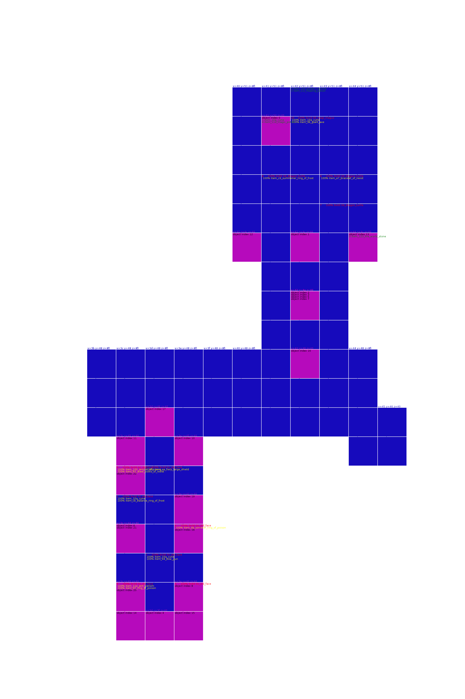
water_world_watery_labyrinth_area
Item Memory used 16
Creatures attributes 37/62/128
0 100% 0x30 0d_deha wd94-88 md168-179 a40 a40 m38
100% item_e6_ring_of_drain
1 100% 0x30 00_sand_leech_a wd39-55 md65-107 a8 a7 m0
2 100% 0x30 0d_deha wd94-88 md168-179 a40 a40 m38
100% item_10c_torch
3 100% 0x30 00_sand_leech_a wd39-55 md65-107 a8 a7 m0
100% item_10a_cune
4 100% 0x30 08_dark_spider wd65-49 md65-74 a8 a8 m0
100% item_120_divine_symbol
5 100% 0x30 08_dark_spider wd65-49 md65-74 a8 a8 m0
100% item_11f_anti_paralytic
6 100% 0x30 08_dark_spider wd65-49 md65-74 a8 a8 m0
7 100% 0x30 08_dark_spider wd65-49 md65-74 a8 a8 m0
100% item_a7_large_shield
8 100% 0x60 08_trickster wd69-87 md39-18 a12 a10 m0
9 100% 0x60 08_trickster wd69-87 md39-18 a12 a10 m0
100% item_11c_healing_potion
a 100% 0x60 08_trickster wd69-87 md39-18 a12 a10 m0
b 100% 0x40 09_koazul wd101-112 md234-255 a38 a40 m0
100% item_54_fiery_full_helm
c 100% 0x40 09_koazul wd101-112 md234-255 a38 a40 m0
100% item_11c_healing_potion
d 100% 0x40 09_koazul wd101-112 md234-255 a38 a40 m0
e 100% 0x40 09_koazul wd101-112 md234-255 a38 a40 m0
100% item_108_amulet_of_winter
f 100% 0x40 09_koazul wd101-112 md234-255 a38 a40 m0
10 100% 0x30 05_blood_slime wd68-70 md131-255 a5 a4 m0
11 100% 0x30 05_blood_slime wd68-70 md131-255 a5 a4 m0
100% item_40_deadly_battle_axe
12 100% 0x30 0c_gaze_hopper wd103-91 md130-133 a24 a25 m0
13 100% 0x30 0c_gaze_hopper wd103-91 md130-133 a24 a25 m0
14 100% 0x30 0c_gaze_hopper wd103-91 md130-133 a24 a25 m0
15 100% 0x30 01_blue_flicker wd60-65 md52-52 a8 a6 m0
16 100% 0x30 01_blue_flicker wd60-65 md52-52 a8 a6 m0
17 100% 0x30 05_armored_jinn wd130-124 md70-182 a25 a25 m0
18 100% 0x30 05_armored_jinn wd130-124 md70-182 a25 a25 m0
19 100% 0x30 05_armored_jinn wd130-124 md70-182 a25 a25 m0
1a 100% 0x30 0c_gaze_hopper wd103-91 md130-133 a24 a25 m0
1b 100% 0x30 0c_gaze_hopper wd103-91 md130-133 a24 a25 m0
1c 100% 0x40 01_blue_flicker wd60-65 md52-52 a8 a6 m0
1d 100% 0x40 01_blue_flicker wd60-65 md52-52 a8 a6 m0
1e 100% 0x40 01_blue_flicker wd60-65 md52-52 a8 a6 m0
1f 100% 0x40 01_blue_flicker wd60-65 md52-52 a8 a6 m0
0 item_10a_cune
1 item_11f_anti_paralytic
2 item_13_broad_sword
3 item_b4_harden_tower_shield
4 item_11c_healing_potion
5 item_11e_anti_venom
6 item_93_steel_boots_of_curing
7 item_11d_magic_potion
8 item_11c_healing_potion
9 item_11c_healing_potion
a item_76_god_plate
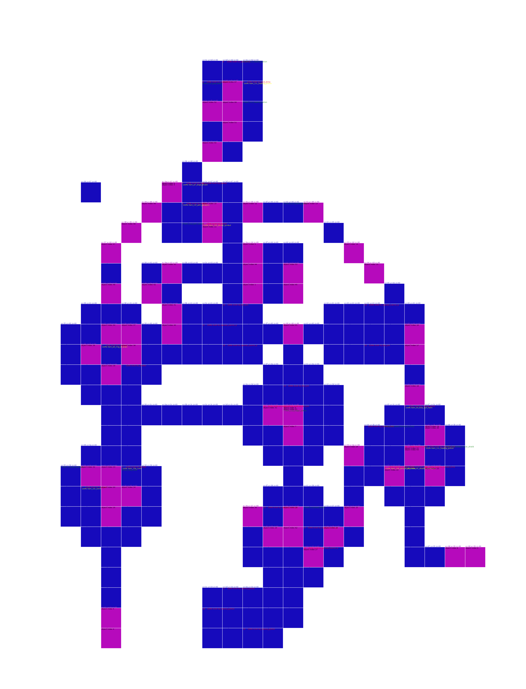
Monster World
monster_world_false_eye_area
Item Memory used 16
Creatures attributes 40/98/128
0 100% 0x60 0d_slasher wd98-85 md103-116 a40 a40 m0
100% item_b1_tower_shield
1 100% 0x60 0d_slasher wd98-85 md103-116 a40 a40 m0
2 100% 0x60 0d_slasher wd98-85 md103-116 a40 a40 m0
100% item_11e_anti_venom
3 100% 0x60 08_berzerker wd85-59 md26-94 a35 a28 m0
100% item_11c_healing_potion
4 100% 0x60 04_great_frog wd114-155 md116-124 a8 a8 m0
5 100% 0x60 04_great_frog wd114-155 md116-124 a8 a8 m0
100% item_b6_caustic_tower_shield
6 100% 0x60 04_great_frog wd114-155 md116-124 a8 a8 m0
7 100% 0x60 04_great_frog wd114-155 md116-124 a8 a8 m0
100% item_106_amulet_of_recovery
8 100% 0x60 04_great_frog wd114-155 md116-124 a8 a8 m0
100% item_9d_frosty_leg_guard
9 100% 0x60 04_great_frog wd114-155 md116-124 a8 a8 m0
100% item_11c_healing_potion
a 100% 0x60 05_master_howler wd101-83 md42-117 a40 a30 m0
b 100% 0x60 09_freak wd94-90 md120-156 a78 a65 m0
100% item_31_blood_sword
c 100% 0x60 09_freak wd94-90 md120-156 a78 a65 m0
100% item_10e_sacred_feather
d 100% 0x60 09_freak wd94-90 md120-156 a78 a65 m0
100% item_10a_cune
e 100% 0x60 09_freak wd94-90 md120-156 a78 a65 m0
100% item_43_warrior_bow
f 100% 0x60 09_freak wd94-90 md120-156 a78 a65 m0
100% item_11e_anti_venom
10 100% 0x60 09_descrypha wd91-130 md255-221 a180 a220 m0
11 100% 0x60 05_gargaral wd103-103 md255-255 a26 a26 m0
100% item_10a_cune
12 100% 0x60 05_gargaral wd103-103 md255-255 a26 a26 m0
100% item_10a_cune
13 100% 0x60 05_gargaral wd103-103 md255-255 a26 a26 m0
14 100% 0x60 0a_warpoor wd104-46 md124-133 a28 a30 m0
100% item_6a_fiery_plate_mail
15 100% 0x60 0a_warpoor wd104-46 md124-133 a28 a30 m0
100% item_138_soul_pod_29_sp
16 100% 0x60 00_acid_skull wd72-78 md116-111 a12 a10 m0
100% item_11c_healing_potion
17 100% 0x60 00_acid_skull wd72-78 md116-111 a12 a10 m0
100% item_81_fiery_gauntlet
18 100% 0x40 00_acid_skull wd72-78 md116-111 a12 a10 m0
30 100% 0x10 02_lizard_servant wd195-195 md195-195 a24 a24 m30
31 100% 0x10 06_lizard_servant wd195-195 md195-195 a24 a24 m30
0 item_11c_healing_potion
1 item_12e_dorados_ashes
2 item_11c_healing_potion
3 item_11c_healing_potion
4 item_123_fire_world_stone
5 item_123_fire_world_stone
6 item_124_poison_vaccine
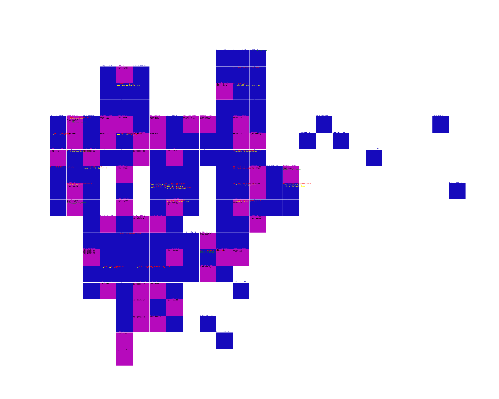
monster_world_screeching_area
Item Memory used 16
Creatures attributes 41/128/128
0 100% 0x14 02_fire_jinn wd81-81 md70-85 a20 a20 m0
100% item_10e_sacred_feather
1 100% 0x14 02_fire_jinn wd81-81 md70-85 a20 a20 m0
100% item_11f_anti_paralytic
2 100% 0x14 02_fire_jinn wd81-81 md70-85 a20 a20 m0
3 100% 0x40 08_hermit_crab wd74-87 md174-205 a40 a35 m0
100% item_10a_cune
4 100% 0x40 08_hermit_crab wd74-87 md174-205 a40 a35 m0
100% item_34_shining_mace
5 100% 0x50 0d_saurian_warrior_b wd90-111 md255-255 a36 a50 m0
6 100% 0x90 0d_saurian_warrior_b wd90-111 md255-255 a36 a50 m0
7 100% 0x50 0d_saurian_warrior_b wd90-111 md255-255 a36 a50 m0
100% item_11e_anti_venom
8 100% 0x40 0d_arachness wd78-156 md182-221 a36 a36 m0
100% item_95_caustic_steel_boots
9 100% 0x40 0d_arachness wd78-156 md182-221 a36 a36 m0
100% item_10a_cune
a 100% 0x30 0d_arachness wd78-156 md182-221 a36 a36 m0
b 100% 0x30 05_warden wd195-182 md208-234 a12 a16 m0
100% item_c_shadow_blade
c 100% 0x30 05_warden wd195-182 md208-234 a12 a16 m0
100% item_10a_cune
d 100% 0x40 05_warden wd195-182 md208-234 a12 a16 m0
100% item_11c_healing_potion
e 100% 0x40 05_warden wd195-182 md208-234 a12 a16 m0
100% item_126_bottle_of_light
f 100% 0x40 04_tree_ogre wd65-94 md130-202 a69 a69 m0
100% item_12e_dorados_ashes
10 100% 0x40 04_tree_ogre wd65-94 md130-202 a69 a69 m0
100% item_105_amulet_of_balance
11 100% 0x40 04_tree_ogre wd65-94 md130-202 a69 a69 m0
100% item_10a_cune
21 100% 0x10 0e_necron wd98-101 md255-190 a85 a90 m22
100% item_7f_metal_glove
30 100% 0x10 01_auriel_c wd255-255 md255-255 a90 a110 m21
100% item_5f_magical_leather_armor
0 item_11c_healing_potion
1 item_d4_dark_ring
2 item_127_acid_vaccine
1c item_11_broad_sword
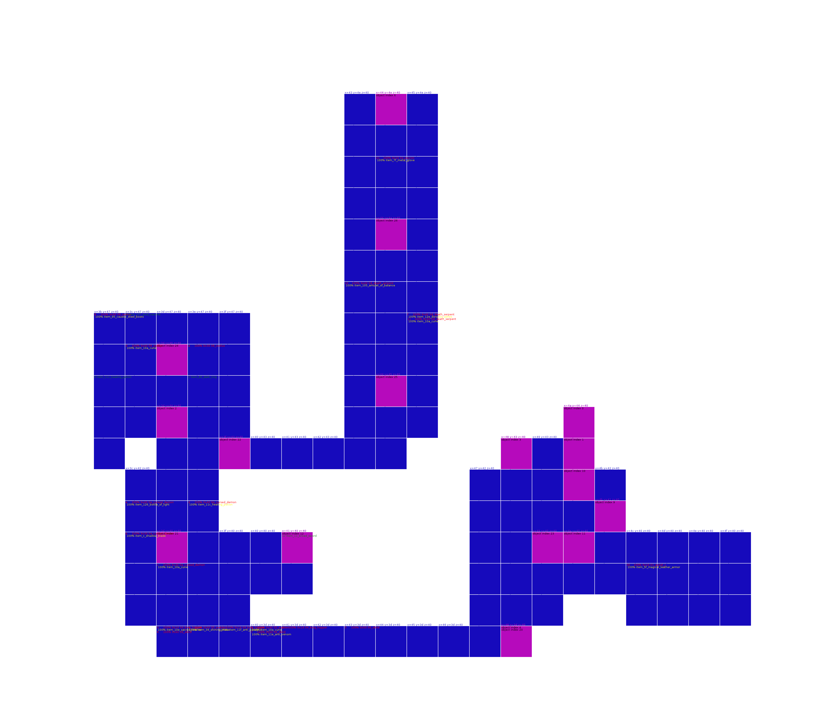
Illusion World
illusion_world_gloomy_domain
Item Memory used 9
Creatures attributes 12/59/128
0 100% 0x30 00_bone_demon wd114-36 md25-103 a20 a22 m0
1 100% 0x30 00_bone_demon wd114-36 md25-103 a20 a22 m0
100% item_118_iron_key
2 100% 0x30 00_bone_demon wd114-36 md25-103 a20 a22 m0
3 100% 0x30 0e_mystic_tower wd103-72 md65-91 a20 a20 m0
4 100% 0x30 0e_mystic_tower wd103-72 md65-91 a20 a20 m0
100% item_10a_cune
5 100% 0x30 0e_mystic_tower wd103-72 md65-91 a20 a20 m0
6 100% 0x40 00_bone_demon wd114-36 md25-103 a20 a22 m0
7 100% 0x40 00_bone_demon wd114-36 md25-103 a20 a22 m0
8 100% 0x40 00_bone_demon wd114-36 md25-103 a20 a22 m0
100% item_16_guardian_broad_sword
9 100% 0x30 01_demon_bat wd65-88 md104-62 a14 a20 m0
100% item_11e_anti_venom
a 100% 0x30 01_demon_bat wd65-88 md104-62 a14 a20 m0
100% item_10a_cune
b 100% 0x40 00_kabasaur wd100-117 md124-103 a40 a34 m0
c 100% 0x40 00_kabasaur wd100-117 md124-103 a40 a34 m0
100% item_10a_cune
d 100% 0x40 00_kabasaur wd100-117 md124-103 a40 a34 m0
e 100% 0x40 00_kabasaur wd100-117 md124-103 a40 a34 m0
100% item_10a_cune
f 100% 0x40 00_kabasaur wd100-117 md124-103 a40 a34 m0
10 100% 0x30 01_demon_bat wd65-88 md104-62 a14 a20 m0
100% item_10a_cune
11 100% 0x30 01_demon_bat wd65-88 md104-62 a14 a20 m0
100% item_ba_harden_gothic_shield
100% item_ec_bracelet_of_recovery
20 100% 0x20 02_dark_imp wd98-85 md255-255 a15 a20 m0
100% item_10a_cune
21 100% 0x20 09_imp wd74-96 md62-78 a10 a11 m0
22 100% 0x20 00_dark_spider wd65-49 md65-74 a8 a8 m0
23 100% 0x20 06_black_imp wd98-98 md255-255 a15 a20 m0
100% item_10a_cune
24 100% 0x20 09_sloth_bug wd104-91 md78-124 a23 a20 m0
100% item_f_broad_sword
25 100% 0x20 0d_crying_root wd65-109 md26-130 a12 a12 m0
100% item_10a_cune
26 100% 0x30 01_myconid wd56-91 md34-104 a14 a13 m0
100% item_10a_cune
27 100% 0x30 01_myconid wd56-91 md34-104 a14 a13 m0
100% item_b3_tower_shield_of_honor
28 100% 0x40 00_kabasaur wd100-117 md124-103 a40 a34 m0
30 100% 0x20 0e_blank wd0-0 md0-0 a0 a0 m39
2 item_120_divine_symbol
3 item_10a_cune
5 item_10a_cune
6 item_10a_cune
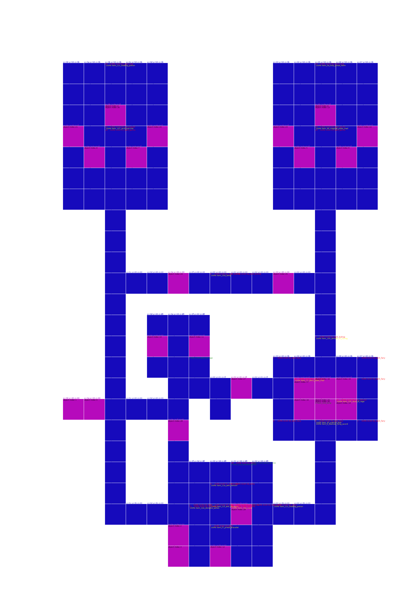
illusion_world_bewilderment_domain
Item Memory used 16
Creatures attributes 34/104/128
0 100% 0x20 01_gargaral wd103-103 md255-255 a26 a26 m0
1 100% 0x20 08_dark_spider wd65-49 md65-74 a8 a8 m0
100% item_39_axe
2 100% 0x20 08_dark_spider wd65-49 md65-74 a8 a8 m0
100% item_4e_helm
3 100% 0x20 01_gargaral wd103-103 md255-255 a26 a26 m0
100% item_126_bottle_of_light
4 100% 0x20 01_gargaral wd103-103 md255-255 a26 a26 m0
5 100% 0x30 04_demon_warrior wd85-104 md91-124 a50 a50 m0
6 100% 0x30 04_demon_warrior wd85-104 md91-124 a50 a50 m0
7 100% 0x20 0a_demons_eye wd65-60 md255-255 a59 a55 m0
8 100% 0x20 0a_demons_eye wd65-60 md255-255 a59 a55 m0
9 100% 0x20 02_skeleton wd72-44 md95-113 a15 a14 m0
a 100% 0x40 04_demon_warrior wd85-104 md91-124 a50 a50 m0
b 100% 0x40 04_demon_warrior wd85-104 md91-124 a50 a50 m0
c 100% 0x40 04_demon_warrior wd85-104 md91-124 a50 a50 m0
d 100% 0x40 04_demon_warrior wd85-104 md91-124 a50 a50 m0
e 100% 0x40 04_demon_warrior wd85-104 md91-124 a50 a50 m0
f 100% 0x80 0a_rotting_face wd208-208 md156-228 a80 a88 m0
10 100% 0x40 09_cocoon_plant wd81-133 md46-59 a15 a15 m0
11 100% 0x40 09_cocoon_plant wd81-133 md46-59 a15 a15 m0
12 100% 0x40 00_earth_knight wd101-99 md91-73 a30 a26 m0
13 100% 0x10 02_mystic_tower wd103-72 md65-91 a20 a20 m0
14 100% 0x30 09_steel_servant wd113-139 md83-127 a26 a28 m0
15 100% 0x60 09_steel_servant wd113-139 md83-127 a26 a28 m0
16 100% 0x30 09_steel_servant wd113-139 md83-127 a26 a28 m0
21 100% 0x40 09_cocoon_plant wd81-133 md46-59 a15 a15 m0
22 100% 0x40 00_earth_knight wd101-99 md91-73 a30 a26 m0
30 100% 0x10 00_gorgoral wd103-103 md255-255 a0 a0 m37
0 item_10e_sacred_feather
1 item_128_spirit_book
2 item_129_sealed_sword_stone
3 item_11f_anti_paralytic
4 item_12e_dorados_ashes
5 item_10a_cune
6 item_139_soul_pod_14_sp
7 item_10a_cune
8 item_11e_anti_venom
9 item_11c_healing_potion
a item_32_mace
b item_130_blue_crystal
c item_120_divine_symbol
d item_116_key_of_delusion
e item_116_key_of_delusion
f item_116_key_of_delusion
10 item_116_key_of_delusion
11 item_136_soul_pod_5_sp
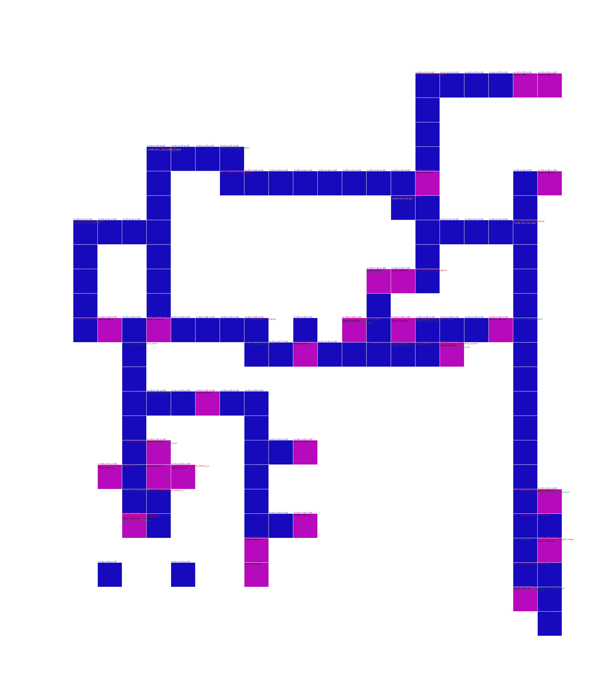
illusion_world_worship_domain
Item Memory used 12
Creatures attributes 18/104/128
0 100% 0x40 08_star_serpent wd55-85 md78-68 a15 a15 m0
1 100% 0x40 08_star_serpent wd55-85 md78-68 a15 a15 m0
100% item_11c_healing_potion
2 100% 0x40 08_star_serpent wd55-85 md78-68 a15 a15 m0
100% item_84_gauntlet
3 100% 0x40 08_star_serpent wd55-85 md78-68 a15 a15 m0
4 100% 0x40 08_star_serpent wd55-85 md78-68 a15 a15 m0
5 100% 0x30 06_gordoral wd103-65 md159-255 a26 a26 m0
100% item_124_poison_vaccine
6 100% 0x30 06_gordoral wd103-65 md159-255 a26 a26 m0
7 100% 0x30 06_gordoral wd103-65 md159-255 a26 a26 m0
8 100% 0x30 05_acid_pod wd65-91 md156-104 a12 a12 m0
100% item_7a_leather_glove
9 100% 0x30 05_acid_pod wd65-91 md156-104 a12 a12 m0
a 100% 0x30 05_acid_pod wd65-91 md156-104 a12 a12 m0
100% item_116_key_of_delusion
b 100% 0x30 05_acid_pod wd65-91 md156-104 a12 a12 m0
100% item_90_steel_boots
c 100% 0x30 05_acid_pod wd65-91 md156-104 a12 a12 m0
100% item_fb_magical_amulet
100% item_42_bow
100% item_10_broad_sword
d 100% 0x30 05_acid_pod wd65-91 md156-104 a12 a12 m0
e 100% 0x30 05_acid_pod wd65-91 md156-104 a12 a12 m0
100% item_10a_cune
f 100% 0x30 05_acid_pod wd65-91 md156-104 a12 a12 m0
10 100% 0x30 0e_rotting_face wd208-208 md156-228 a80 a88 m0
100% item_10a_cune
11 100% 0x30 0e_rotting_face wd208-208 md156-228 a80 a88 m0
100% item_30_guardian_great_sword
12 100% 0x30 0e_rotting_face wd208-208 md156-228 a80 a88 m0
100% item_10a_cune
13 100% 0x30 0e_rotting_face wd208-208 md156-228 a80 a88 m0
14 100% 0x30 0e_rotting_face wd208-208 md156-228 a80 a88 m0
100% item_10a_cune
21 100% 0x5 04_wildowess wd86-109 md146-255 a150 a170 m28
100% item_10a_cune
22 100% 0x10 01_gorthaur wd111-91 md78-234 a30 a36 m27
100% item_10a_cune
23 100% 0x5 08_fester wd156-73 md75-255 a50 a60 m29
100% item_11c_healing_potion
30 100% 0x80 02_fat_mole_d wd0-0 md0-0 a0 a0 m26
100% item_10a_cune
0 item_10a_cune
1 item_139_soul_pod_14_sp
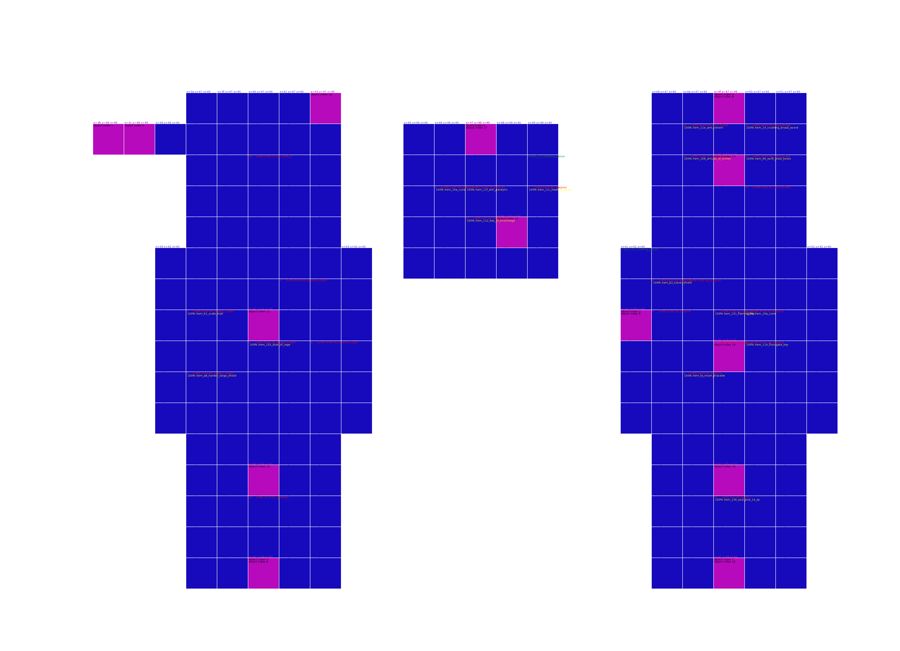
illusion_world_dream_domain
Item Memory used 2
Creatures attributes 38/89/255
0 100% 0x30 00_dark_spirits wd72-85 md255-255 a35 a40 m0
1 100% 0x30 00_dark_spirits wd72-85 md255-255 a35 a40 m0
2 100% 0x30 00_dark_spirits wd72-85 md255-255 a35 a40 m0
20 100% 0x10 01_disguise wd140-107 md255-255 a90 a110 m20
0 item_6_keenest_long_sword
1 item_ea_bracelet_of_composure
2 item_5_long_sword
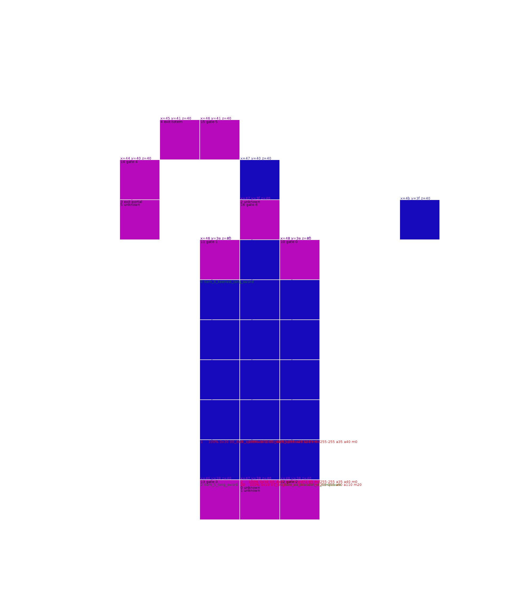
Death World
death_world_dark_castle_layer
Item Memory used 16
Creatures attributes 51/78/128
0 100% 0x30 00_hell_hunter wd88-91 md60-94 a0 a0 m0
100% item_ee_mighty_ring
1 100% 0x30 00_hell_hunter wd88-91 md60-94 a0 a0 m0
100% item_22_mighty_bastard_sword
2 100% 0x30 00_hell_hunter wd88-91 md60-94 a0 a0 m0
3 100% 0x80 02_elder wd77-81 md26-47 a14 a14 m0
100% item_78_knight_plate_mail
4 100% 0x10 02_elder wd77-81 md26-47 a14 a14 m0
100% item_10a_cune
5 100% 0x30 08_wyvern wd104-156 md70-247 a75 a70 m0
100% item_80_metal_glove
6 100% 0x30 08_wyvern wd104-156 md70-247 a75 a70 m0
100% item_11d_magic_potion
7 100% 0x30 06_dweller wd98-107 md103-122 a18 a20 m0
100% item_61_scale_mail
8 100% 0x30 06_dweller wd98-107 md103-122 a18 a20 m0
100% item_126_bottle_of_light
9 100% 0x30 06_dweller wd98-107 md103-122 a18 a20 m0
a 100% 0x30 06_dweller wd98-107 md103-122 a18 a20 m0
100% item_5a_holy_great_helm
b 100% 0x30 06_dweller wd98-107 md103-122 a18 a20 m0
100% item_12e_dorados_ashes
c 100% 0x30 08_oxelus wd72-78 md117-104 a63 a58 m0
100% item_72_holy_plate_mail
d 100% 0x30 08_oxelus wd72-78 md117-104 a63 a58 m0
100% item_ca_summoner_ring_of_frost
e 100% 0x30 08_oxelus wd72-78 md117-104 a63 a58 m0
100% item_10e_sacred_feather
f 100% 0x30 08_oxelus wd72-78 md117-104 a63 a58 m0
10 100% 0x30 01_dark_spirits wd124-85 md255-255 a35 a40 m0
100% item_bc_gothic_shield_of_resist
11 100% 0x30 01_dark_spirits wd124-85 md255-255 a35 a40 m0
12 100% 0x30 0a_armored_slayer wd78-101 md96-107 a120 a90 m0
13 100% 0x30 0a_armored_slayer wd78-101 md96-107 a120 a90 m0
14 100% 0x30 01_dark_spirits wd124-85 md255-255 a35 a40 m0
15 100% 0x30 0a_armored_slayer wd78-101 md96-107 a120 a90 m0
20 100% 0x30 08_armored_guardian wd103-90 md255-91 a100 a80 m36
0 item_12e_dorados_ashes
1 item_10e_sacred_feather
2 item_10e_sacred_feather
3 item_11c_healing_potion
4 item_123_fire_world_stone
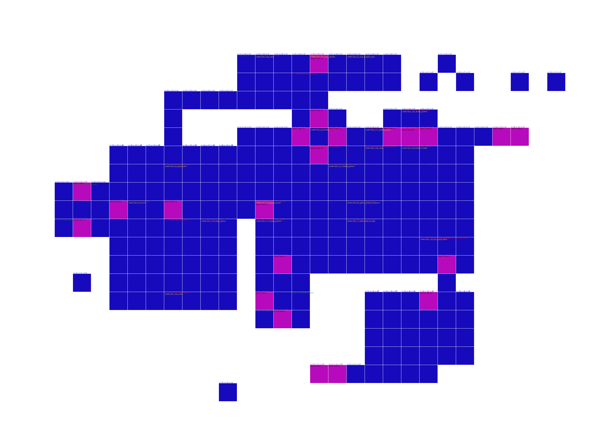
death_world_gate_of_the_dead
Item Memory used 16
Creatures attributes 197/128/128
0 100% 0x40 0a_cocoon_plant wd65-91 md156-104 a12 a12 m0
1 100% 0x40 0a_cocoon_plant wd65-91 md156-104 a12 a12 m0
100% item_11d_magic_potion
2 100% 0x40 02_bone_wolf wd91-39 md255-117 a225 a220 m0
100% item_11c_healing_potion
3 100% 0x40 0d_cocoon_plant wd65-91 md156-104 a12 a12 m0
100% item_10a_cune
4 100% 0x40 0d_cocoon_plant wd65-91 md156-104 a12 a12 m0
100% item_138_soul_pod_29_sp
5 100% 0x40 0d_cocoon_plant wd65-91 md156-104 a12 a12 m0
100% item_124_poison_vaccine
6 100% 0x40 05_doriwi wd91-91 md156-107 a180 a200 m0
100% item_101_amulet_of_resist
7 100% 0x40 05_doriwi wd91-91 md156-107 a180 a200 m0
100% item_73_full_plate
8 100% 0x40 05_doriwi wd91-91 md156-107 a180 a200 m0
100% item_10a_cune
9 100% 0x40 05_doriwi wd91-91 md156-107 a180 a200 m0
100% item_b8_tower_shield_of_resist
a 100% 0x40 0a_skeleton wd72-44 md95-113 a15 a14 m0
100% item_127_acid_vaccine
b 100% 0x40 0a_skeleton wd72-44 md95-113 a15 a14 m0
100% item_98_steel_boots_of_resist
c 100% 0x50 0a_skeleton wd72-44 md95-113 a15 a14 m0
d 100% 0x40 00_watcher_plant wd39-68 md26-42 a12 a12 m0
100% item_b_lethal_rapier
e 100% 0x40 00_watcher_plant wd39-68 md26-42 a12 a12 m0
100% item_11f_anti_paralytic
f 100% 0x40 00_watcher_plant wd39-68 md26-42 a12 a12 m0
100% item_67_plate_mail_of_curing
10 100% 0x60 01_blood_slime wd68-70 md131-255 a5 a4 m0
100% item_8b_deadly_arm_guard
11 100% 0x60 01_blood_slime wd68-70 md131-255 a5 a4 m0
12 100% 0x60 01_blood_slime wd68-70 md131-255 a5 a4 m0
13 100% 0x60 01_blood_slime wd68-70 md131-255 a5 a4 m0
14 100% 0x60 01_blood_slime wd68-70 md131-255 a5 a4 m0
20 100% 0x5 0c_hollow_mage wd105-65 md255-255 a44 a144 m23
0 item_10d_lamp
1 item_139_soul_pod_14_sp
2 item_10e_sacred_feather
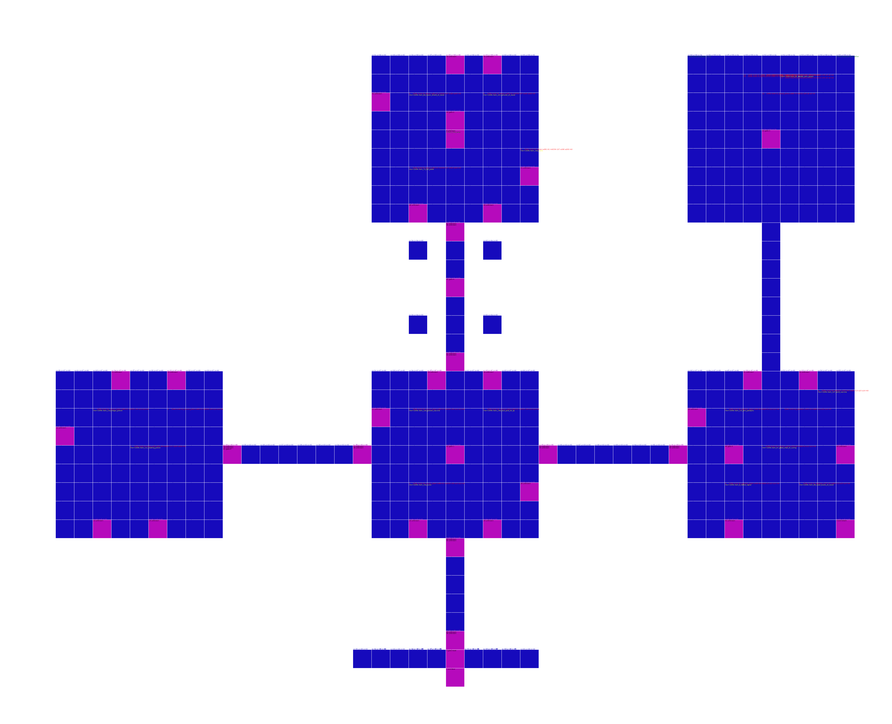
death_world_lingering_curse_layer
Item Memory used 16
Creatures attributes 93/99/128
0 100% 0x30 01_stack_eyes wd114-198 md163-138 a60 a72 m0
100% item_11e_anti_venom
1 100% 0x30 01_stack_eyes wd114-198 md163-138 a60 a72 m0
100% item_11f_anti_paralytic
2 100% 0x30 01_stack_eyes wd114-198 md163-138 a60 a72 m0
3 100% 0x30 01_stack_eyes wd114-198 md163-138 a60 a72 m0
100% item_10d_lamp
4 100% 0x30 01_stack_eyes wd114-198 md163-138 a60 a72 m0
5 100% 0x40 05_unknown_g wd78-65 md164-255 a62 a92 m0
6 100% 0x40 05_unknown_g wd78-65 md164-255 a62 a92 m0
7 100% 0x40 05_unknown_g wd78-65 md164-255 a62 a92 m0
8 100% 0x20 08_apocrypha wd52-143 md255-255 a180 a220 m0
100% item_10a_cune
9 100% 0x20 01_acid_pod wd65-91 md156-104 a12 a12 m0
a 100% 0x20 08_apocrypha wd52-143 md255-255 a180 a220 m0
100% item_11e_anti_venom
b 100% 0x20 01_acid_pod wd65-91 md156-104 a12 a12 m0
100% item_e8_bracelet_of_balance
c 100% 0x20 08_apocrypha wd52-143 md255-255 a180 a220 m0
100% item_10a_cune
d 100% 0x20 01_acid_pod wd65-91 md156-104 a12 a12 m0
100% item_b2_tower_shield
e 100% 0x30 0c_old_face wd65-52 md255-255 a120 a110 m0
100% item_11f_anti_paralytic
f 100% 0x30 0c_old_face wd65-52 md255-255 a120 a110 m0
100% item_123_fire_world_stone
10 100% 0x30 0c_old_face wd65-52 md255-255 a120 a110 m0
100% item_12e_dorados_ashes
11 100% 0x30 0c_old_face wd65-52 md255-255 a120 a110 m0
12 100% 0x30 0c_old_face wd65-52 md255-255 a120 a110 m0
100% item_12e_dorados_ashes
13 100% 0x30 0c_old_face wd65-52 md255-255 a120 a110 m0
100% item_17_dragon_sword
14 100% 0x30 0c_old_face wd65-52 md255-255 a120 a110 m0
15 100% 0x30 0c_old_face wd65-52 md255-255 a120 a110 m0
100% item_55_great_helm
16 100% 0x30 0c_old_face wd65-52 md255-255 a120 a110 m0
17 100% 0x30 0c_old_face wd65-52 md255-255 a120 a110 m0
100% item_10a_cune
22 100% 0x20 0e_manna_python wd117-130 md151-122 a32 a27 m0
100% item_ac_great_shield
23 100% 0x20 04_berzerker wd85-59 md26-94 a35 a28 m0
100% item_3e_living_axe
30 100% 0x20 00_unknown_e wd91-81 md130-130 a0 a0 m32
31 100% 0x20 04_blank wd90-90 md90-90 a0 a0 m31
0 item_10e_sacred_feather
1 item_120_divine_symbol
2 item_48_crown
3 item_cc_priest_ring_of_frost
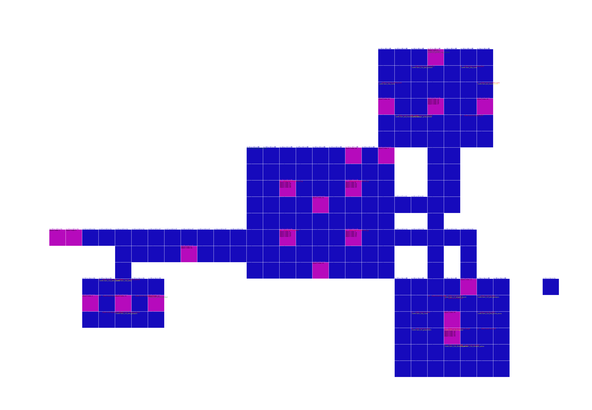
death_world_undead_layer
Item Memory used 16
Creatures attributes 45/128/128
0 100% 0x40 05_hell_hunter wd68-52 md104-94 a15 a14 m0
100% item_114_floodgate_key
1 100% 0x40 05_hell_hunter wd68-52 md104-94 a15 a14 m0
2 100% 0x40 05_hell_hunter wd68-52 md104-94 a15 a14 m0
3 100% 0x40 05_hell_hunter wd68-52 md104-94 a15 a14 m0
100% item_69_magical_plate_mail
4 100% 0x30 08_claw_head wd91-104 md161-103 a97 a97 m0
100% item_11c_healing_potion
5 100% 0x30 08_claw_head wd91-104 md161-103 a97 a97 m0
100% item_10e_sacred_feather
6 100% 0x30 08_claw_head wd91-104 md161-103 a97 a97 m0
100% item_45_fiery_bow_gun
7 100% 0x15 01_horned_skull wd78-65 md52-91 a26 a26 m0
100% item_e4_ring_of_dead_spirit
8 100% 0x15 01_horned_skull wd78-65 md52-91 a26 a26 m0
9 100% 0x15 01_horned_skull wd78-65 md52-91 a26 a26 m0
a 100% 0x15 01_horned_skull wd78-65 md52-91 a26 a26 m0
b 100% 0x15 01_horned_skull wd78-65 md52-91 a26 a26 m0
c 100% 0x15 01_horned_skull wd78-65 md52-91 a26 a26 m0
d 100% 0x15 01_horned_skull wd78-65 md52-91 a26 a26 m0
e 100% 0x15 01_horned_skull wd78-65 md52-91 a26 a26 m0
f 100% 0x15 01_horned_skull wd78-65 md52-91 a26 a26 m0
10 100% 0x15 01_horned_skull wd78-65 md52-91 a26 a26 m0
11 100% 0x30 0e_claw_head wd88-91 md60-94 a0 a0 m0
12 100% 0x30 0e_claw_head wd88-91 md60-94 a0 a0 m0
13 100% 0x30 0e_claw_head wd88-91 md60-94 a0 a0 m0
14 100% 0x30 0e_claw_head wd88-91 md60-94 a0 a0 m0
21 100% 0x20 04_king_edward wd255-91 md255-255 a154 a150 m35
30 100% 0x20 01_unknown_b wd255-255 md255-255 a90 a110 m34
31 100% 0x10 09_pulsating_heart wd65-62 md255-255 a0 a0 m0
32 100% 0x10 0d_fat_mole_e wd0-0 md0-0 a0 a0 m33
0 item_11c_healing_potion
1 item_125_dust_of_rage
2 item_128_spirit_book
3 item_11c_healing_potion
4 item_123_fire_world_stone
5 item_120_divine_symbol
6 item_127_acid_vaccine
7 item_11d_magic_potion
8 item_f2_priest_bracelet
9 item_10e_sacred_feather
a item_10a_cune
1c item_12e_dorados_ashes
1d item_10d_lamp
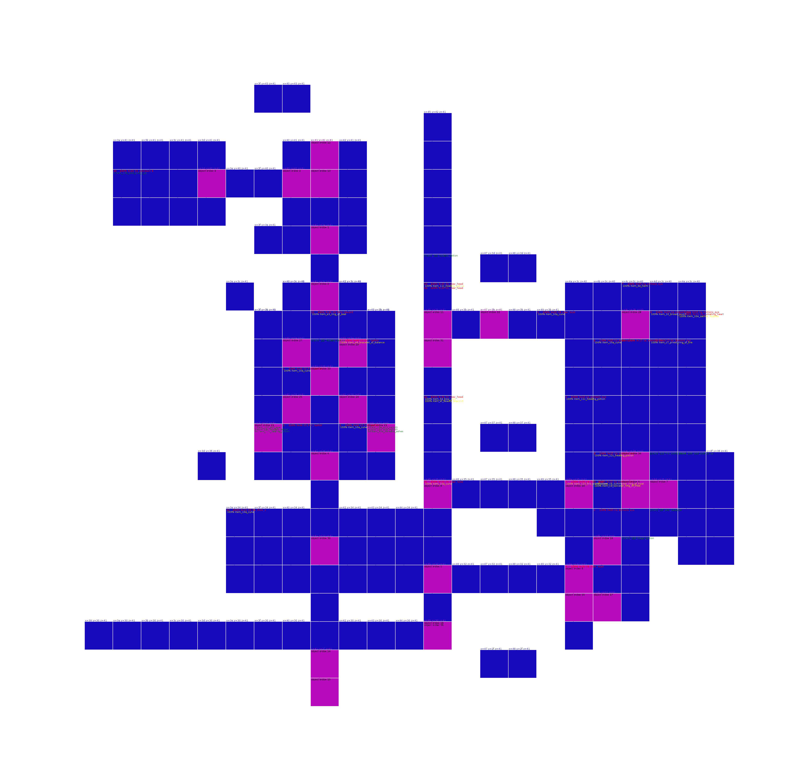
Shadow Tower
shadow_tower_part1
Item Memory used 0
Creatures attributes 0/0/0
shadow_tower_part2
Item Memory used 0
Creatures attributes 0/0/0
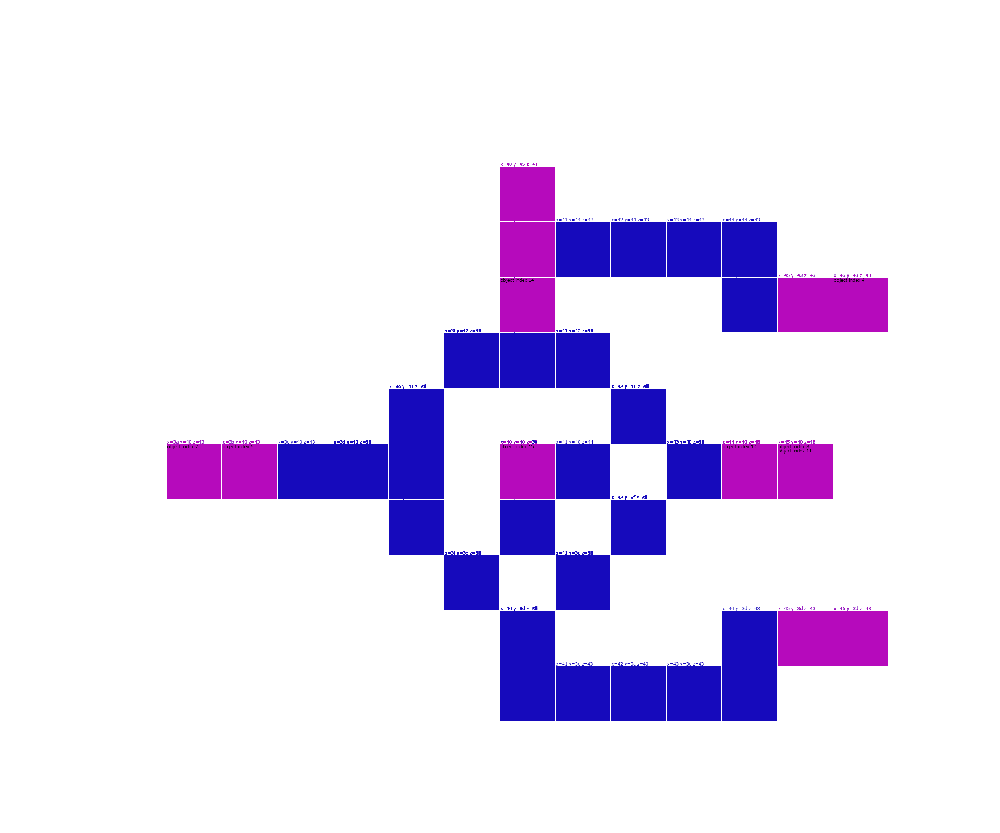
shadow_tower_part3
Item Memory used 0
Creatures attributes 0/0/0
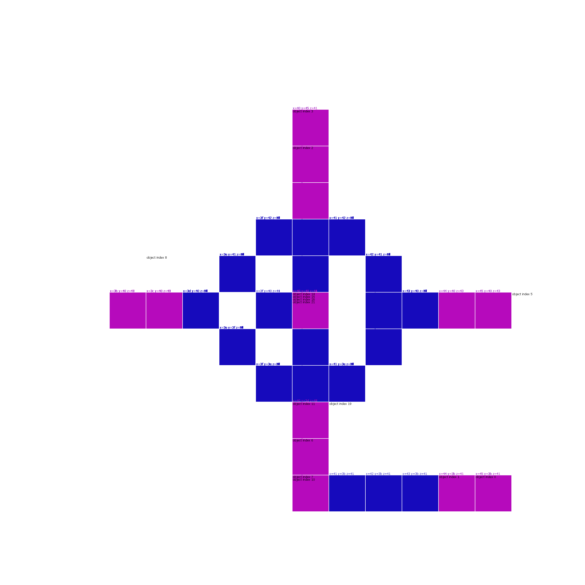
Void
void
Item Memory used 0
Creatures attributes 114/128/128
0 0% 0x20 00_balron_a wd255-255 md255-255 a114 a114 m15
3 0% 0x20 03_balron_b wd143-161 md255-242 a194 a194 m16
5 0% 0x20 08_demon_king wd65-91 md255-255 a0 a0 m18
30 100% 0x20 01_unknown_i wd143-156 md111-125 a114 a114 m0
31 100% 0x20 02_unknown_j wd143-156 md111-125 a114 a114 m0
32 0% 0x20 04_unknown_k wd0-0 md0-0 a0 a0 m17
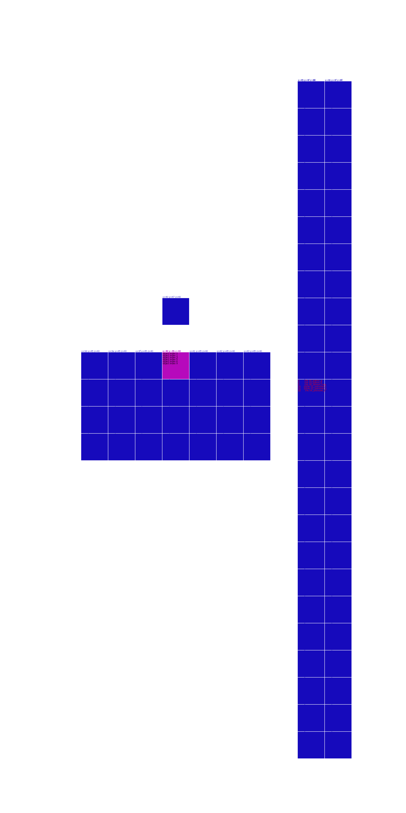